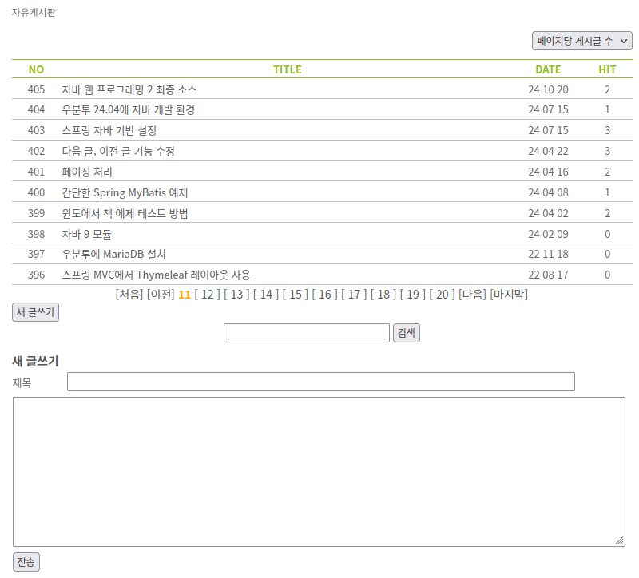
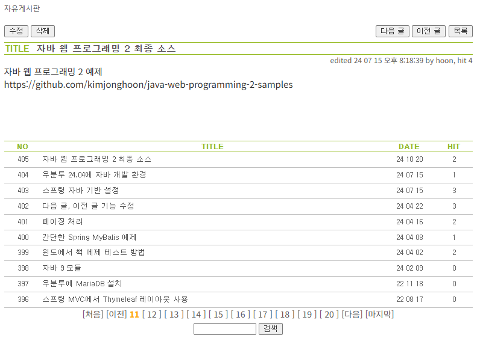
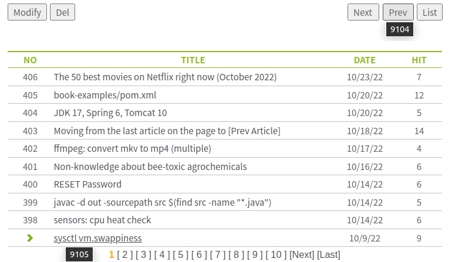
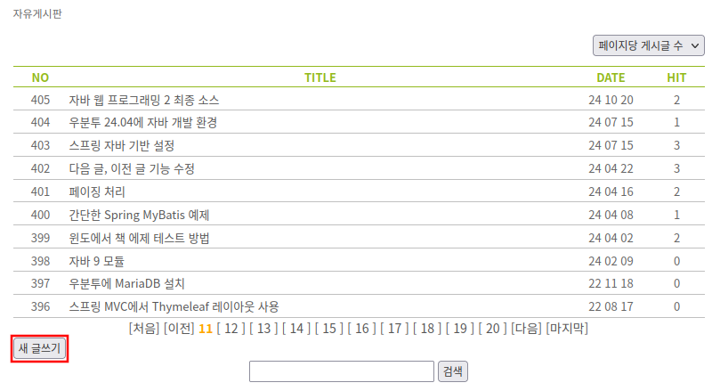
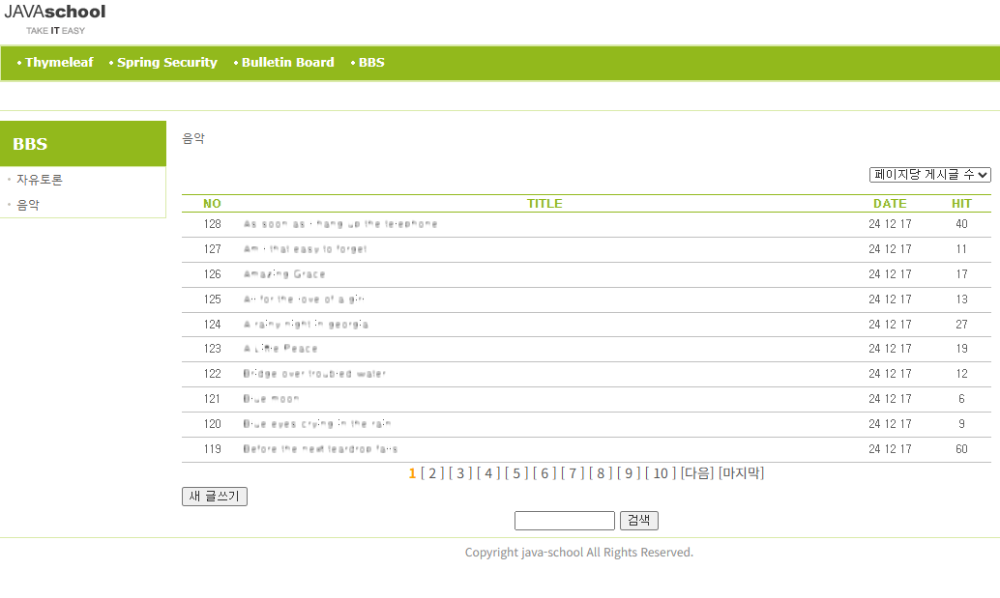

Bulletin Board System
RESTful URLs for BBS
The bulletin board URL starts with /bbs.
In the /bbs/chat/54 URL, chat is the bulletin board code
and 54 is the unique post number.
List GET /bbs/chat?page=1&search=
Details GET /bbs/chat/54?page=1&search=
New POST /bbs/chat
Edit PUT /bbs/chat/54?page=1&search=
Delete DELETE /bbs/chat/54?page=1&search=
Prototype
articles/list.html
<html xmlns:th="http://www.thymeleaf.org">
<head>
<title>자유게시판</title>
<meta name="Keywords" content="List" />
<meta name="Description" content="List" />
<link rel="stylesheet" media="screen" href="../../../static/css/screen.css" />
<link rel="stylesheet" media="screen" href="../../../static/css/ko.css" />
<style>
article {
width: 777px;
margin: 0 auto;
}
</style>
<script src="../../../static/js/jquery.js"></script>
</head>
<body>
<article>
<script th:inline="javascript">
$(document).ready(function() {
$('#new-post-btn').click(function() {
var $form = $('#writeForm');
if ($form.is(':hidden') === true) {
$form.show();
} else {
$form.hide();
}
});
});
</script>
<div id="content-categories">자유게시판</div>
<div style="text-align: right;">
<select id="numberPerPage">
<option value="">페이지당 게시글 수</option>
<option value="10">10</option>
<option value="20">20</option>
<option value="50">50</option>
<option value="100">100</option>
</select>
</div>
<table class="bbs-table" id="list-table">
<tr>
<th style="width: 60px;text-align: center;">NO</th>
<th>TITLE</th>
<th style="width: 84px;text-align: center;">DATE</th>
<th style="width: 60px;text-align: center;">HIT</th>
</tr>
<tr>
<td style="text-align: center;">405</td>
<td><a href="#" title="23488">자바 웹 프로그래밍 2 최종 소스</a></td>
<td style="text-align: center;">24 10 20</td>
<td style="text-align: center;">2</td>
</tr>
<tr>
<td style="text-align: center;">404</td>
<td><a href="#" title="23486">우분투 24.04에 자바 개발 환경</a></td>
<td style="text-align: center;">24 07 15</td>
<td style="text-align: center;">1</td>
</tr>
<tr>
<td style="text-align: center;">403</td>
<td><a href="#" title="23466">스프링 자바 기반 설정</a></td>
<td style="text-align: center;">24 07 15</td>
<td style="text-align: center;">3</td>
</tr>
<tr>
<td style="text-align: center;">402</td>
<td><a href="#" title="23087">다음 글, 이전 글 기능 수정</a></td>
<td style="text-align: center;">24 04 22</td>
<td style="text-align: center;">3</td>
</tr>
<tr>
<td style="text-align: center;">401</td>
<td><a href="#" title="23086">페이징 처리</a></td>
<td style="text-align: center;">24 04 16</td>
<td style="text-align: center;">2</td>
</tr>
<tr>
<td style="text-align: center;">400</td>
<td><a href="#" title="23059">간단한 Spring MyBatis 예제</a></td>
<td style="text-align: center;">24 04 08</td>
<td style="text-align: center;">1</td>
</tr>
<tr>
<td style="text-align: center;">399</td>
<td><a href="#" title="23053">윈도에서 책 에제 테스트 방법</a></td>
<td style="text-align: center;">24 04 02</td>
<td style="text-align: center;">2</td>
</tr>
<tr>
<td style="text-align: center;">398</td>
<td><a href="#" title="22400">자바 9 모듈</a></td>
<td style="text-align: center;">24 02 09</td>
<td style="text-align: center;">0</td>
</tr>
<tr>
<td style="text-align: center;">397</td>
<td><a href="#" title="19746">우분투에 MariaDB 설치</a></td>
<td style="text-align: center;">22 11 18</td>
<td style="text-align: center;">0</td>
</tr>
<tr>
<td style="text-align: center;">396</td>
<td><a href="#" title="19212">스프링 MVC에서 Thymeleaf 레이아웃 사용</a></td>
<td style="text-align: center;">22 08 17</td>
<td style="text-align: center;">0</td>
</tr>
</table>
<div id="paging">
<a href="#" title="1">[처음]</a>
<a href="#" title="10">[이전]</a>
<span class="bbs-strong">11</span>
<a href="#" title="12">[ 12 ]</a>
<a href="#" title="13">[ 13 ]</a>
<a href="#" title="14">[ 14 ]</a>
<a href="#" title="15">[ 15 ]</a>
<a href="#" title="16">[ 16 ]</a>
<a href="#" title="17">[ 17 ]</a>
<a href="#" title="18">[ 18 ]</a>
<a href="#" title="19">[ 19 ]</a>
<a href="#" title="20">[ 20 ]</a>
<a href="#" title="21">[다음]</a>
<a href="#" title="41">[마지막]</a>
</div>
<div>
<input type="button" value="새 글쓰기" id="new-post-btn" />
</div>
<form id="searchForm" action="/bbs/chat" method="get">
<input type="hidden" name="page" value="1" />
<div id="search">
<input type="text" name="search" size="15" maxlength="30" />
<input type="submit" value="검색" />
</div>
</form>
<form id="writeForm" action="/bbs/chat" method="post" style="display: none;">
<table id="write-form" class="bbs-table">
<caption>새 글쓰기</caption>
<tr>
<td>제목</td>
<td><input type="text" name="title" id="title" style="width: 90%" /></td>
</tr>
<tr>
<td colspan="2">
<textarea id="writeForm-ta" name="content" rows="10" cols="50">
</textarea>
</td>
</tr>
<tr>
<td colspan="2">
<input type="submit" value="전송" />
</td>
</tr>
</table>
</form>
<div id="form-group">
<form id="listForm" method="get">
<input type="hidden" name="page" />
<input type="hidden" name="search" value="test" th:value="${param.search }" />
</form>
<form id="viewForm" action="/bbs/chat/" method="get">
<input type="hidden" name="page" value="1" th:value="${param.page }" />
<input type="hidden" name="search" value="test" th:value="${param.search }" />
</form>
</div>
</article>
</body>
</html>
articles/view.html
<html xmlns:th="http://www.thymeleaf.org">
<head>
<title>내용보기</title>
<meta name="Keywords" content="View details" />
<meta name="Description" content="View details" />
<link rel="stylesheet" media="screen" href="../../../static/css/ko.css" />
<link rel="stylesheet" media="screen" href="../../../static/css/screen.css" />
<style>
article {
width: 777px;
margin: 0 auto;
}
</style>
<script src="../../../static/js/jquery.js"></script>
</head>
<body>
<article>
<script th:inline="javascript">
$(document).ready(function() {
$('#edit-post-btn').click(function() {
var $div = $('#detail');
var $form = $('#editForm');
if ($form.is(':hidden') === true) {
$form.show();
$div.hide();
} else {
$form.hide();
$div.show();
}
});
});
</script>
<div id="content-categories">자유게시판</div>
<div style="height: 22px;">
<div style="float: left;">
<input type="button" value="수정" id="edit-post-btn" />
<input type="button" value="삭제" id="del-post-btn" />
</div>
<div style="float: right;">
<input type="button" value="다음 글" title="23489" id="next-post-btn" />
<input type="button" value="이전 글" title="13087" id="prev-post-btn" />
<input type="button" value="목록" id="list-btn" />
</div>
</div>
<div id="detail">
<table class="bbs-table">
<tr>
<th style="width: 50px;text-align: left;vertical-align: top;font-size: 15px;">TITLE</th>
<th style="text-align: left;color: #555;font-size: 15px;" id="post-title">자바 웹 프로그래밍 2 최종 소스</th>
</tr>
</table>
<div id="date-writer-hit">edited 24 07 15 오후 8:18:39 by hoon, hit 4</div>
<div id="post-content">
자바 웹 프로그래밍 2 예제<br />
https://github.com/kimjonghoon/java-web-programming-2-samples
</div>
</div>
<form id="editForm" method="post" style="display: none;">
<input type="hidden" name="page" value="1" />
<input type="hidden" name="search" value="" />
<table id="write-form" class="bbs-table">
<caption>수정</caption>
<tr>
<td>제목</td>
<td><input name="title" type="text" value="웹 프로그래밍 2 최종 소스" style="width: 90%" /></td>
</tr>
<tr>
<td colspan="2">
<textarea id="editForm-ta" name="content" rows="10" style="width: 100%">
자바 웹 프로그래밍 2 예제<br />
https://github.com/kimjonghoon/java-web-programming-2-samples
</textarea>
</td>
</tr>
<tr>
<td colspan="2"><input type="submit" value="전송" /></td>
</table>
</form>
<table class="bbs-table" id="list-table">
<tr>
<th style="width: 60px;text-align: center;">NO</th>
<th>TITLE</th>
<th style="width: 84px;text-align: center;">DATE</th>
<th style="width: 60px;text-align: center;">HIT</th>
</tr>
<tr>
<td style="text-align: center;">405</td>
<td><a href="#" title="23488">자바 웹 프로그래밍 2 최종 소스</a></td>
<td style="text-align: center;">24 10 20</td>
<td style="text-align: center;">2</td>
</tr>
<tr>
<td style="text-align: center;">404</td>
<td><a href="#" title="23486">우분투 24.04에 자바 개발 환경</a></td>
<td style="text-align: center;">24 07 15</td>
<td style="text-align: center;">1</td>
</tr>
<tr>
<td style="text-align: center;">403</td>
<td><a href="#" title="23466">스프링 자바 기반 설정</a></td>
<td style="text-align: center;">24 07 15</td>
<td style="text-align: center;">3</td>
</tr>
<tr>
<td style="text-align: center;">402</td>
<td><a href="#" title="23087">다음 글, 이전 글 기능 수정</a></td>
<td style="text-align: center;">24 04 22</td>
<td style="text-align: center;">3</td>
</tr>
<tr>
<td style="text-align: center;">401</td>
<td><a href="#" title="23086">페이징 처리</a></td>
<td style="text-align: center;">24 04 16</td>
<td style="text-align: center;">2</td>
</tr>
<tr>
<td style="text-align: center;">400</td>
<td><a href="#" title="23059">간단한 Spring MyBatis 예제</a></td>
<td style="text-align: center;">24 04 08</td>
<td style="text-align: center;">1</td>
</tr>
<tr>
<td style="text-align: center;">399</td>
<td><a href="#" title="23053">윈도에서 책 에제 테스트 방법</a></td>
<td style="text-align: center;">24 04 02</td>
<td style="text-align: center;">2</td>
</tr>
<tr>
<td style="text-align: center;">398</td>
<td><a href="#" title="22400">자바 9 모듈</a></td>
<td style="text-align: center;">24 02 09</td>
<td style="text-align: center;">0</td>
</tr>
<tr>
<td style="text-align: center;">397</td>
<td><a href="#" title="19746">우분투에 MariaDB 설치</a></td>
<td style="text-align: center;">22 11 18</td>
<td style="text-align: center;">0</td>
</tr>
<tr>
<td style="text-align: center;">396</td>
<td><a href="#" title="19212">스프링 MVC에서 Thymeleaf 레이아웃 사용</a></td>
<td style="text-align: center;">22 08 17</td>
<td style="text-align: center;">0</td>
</tr>
</table>
<div id="paging">
<a href="#" title="1">[처음]</a>
<a href="#" title="10">[이전]</a>
<span class="bbs-strong">11</span>
<a href="#" title="12">[ 12 ]</a>
<a href="#" title="13">[ 13 ]</a>
<a href="#" title="14">[ 14 ]</a>
<a href="#" title="15">[ 15 ]</a>
<a href="#" title="16">[ 16 ]</a>
<a href="#" title="17">[ 17 ]</a>
<a href="#" title="18">[ 18 ]</a>
<a href="#" title="19">[ 19 ]</a>
<a href="#" title="20">[ 20 ]</a>
<a href="#" title="21">[다음]</a>
<a href="#" title="41">[마지막]</a>
</div>
<form id="searchForm" action="/bbs/chat" method="get">
<input type="hidden" name="page" value="1" />
<div style="text-align: center;">
<input type="text" name="search" size="15" maxlength="30" />
<input type="submit" value="검색" th:value="#{search}" />
</div>
</form>
<div id="form-group" style="display: none">
<form id="listForm" action="/bbs/chat" method="get">
<input type="hidden" name="page" value="11" th:value="${param.page}" />
<input type="hidden" name="search" value="test" th:value="${param.search}" />
</form>
<form id="viewForm" action="/bbs/chat/" method="get">
<input type="hidden" name="page" value="11" th:value="${param.page}" />
<input type="hidden" name="search" value="test" th:value="${param.search}" />
</form>
<form id="delForm" action="/bbs/chat/52" method="post" th:method="DELETE">
<input type="hidden" name="page" value=""11 th:value="${param.page}" />
<input type="hidden" name="search" value="test" th:value="${param.search}" />
</form>
</div>
</article>
</body>
</html>
list.html과 view.html의 자바스크립트를 담는 script 블록을 article 시작 태그 바로 다음에 둔 것은
타임리프 인라인 자바스크립트 코드를 사용하기 때문이다.
인라인 자바스크립트는 src 속성을 사용, 분리하면 작동하지 않는다.
게시판 관련 스타일을 screen.css와 print.css에 추가한다.
.bbs-table {
width: 100%;
margin: 0.7em 0 0 0;
}
.bbs-table > caption {
color: #555;
font-size: 15px;
font-weight: bold;
text-align: left;
}
.bbs-table th {
color: #92B91C;
border-top: 1px solid #92B91C;
border-bottom: 1px solid #92B91C;
}
.bbs-table td {
padding-top: 3px;
padding-bottom: 3px;
border-bottom: 1px solid silver;
line-height: 1.45;
}
.bbs-table td a {
color: #555;
text-decoration: none;
}
.bbs-table td a:hover {
color: #555;
text-decoration: underline;
}
#paging {
text-align: center;
font-size: 14px;
}
#paging > a {
color: #555;
text-decoration: none;
}
#paging > a:hover {
color: #555;
text-decoration: underline;
}
.bbs-strong {
color: #FFA500;
font-weight: bold;
}
#write-form td {
border: none;
}
#write-form textarea {
width: 99%;
}
#content-categories {
margin: 0;
padding-top: 10px;
font-family: Arial, "Helvetica Neue", Helvetica, sans-serif;
font-size: 12px;
color: #666;
margin-bottom: 15px;
}
#date-writer-hit {
display: block;
margin: 0;
padding: 0;
font-size: 12px;
color: #555;
text-align: right;
}
#post-content {
font-size: 15px;
color: #333;
min-height: 100px;
}
탐색기에서 list.html 페이지를 열어본다.
새 글쓰기 버튼은 토글로 구현했다.
클릭하면 글쓰기 양식이 보이고, 다시 클릭하면 양식이 보이지 않는다.

탐색기에서 view.html 파일을 열어 확인한다.

수정 버튼 역시 토글로 구현했다.
수정 버튼을 클릭하면 수정 양식이 보이고, 다시 클릭하면 보이지 않는다.

자바스크립트
list.html과 view.html 페이지에서 글로벌 속성 title에 게시글 번호를 할당했다.
프로토타입에 자바스크립트를 완성할 수 있다.
페이지당 게시글 수 선택박스에서 항목이 선택되었을 때 작동하는 자바스크립트를 $(document).ready(function() { .. }); 안에 다음처럼 구현한다.
list.html
$(document).ready(function() {
$('#new-post-btn').click(function() {
var $form = $('#writeForm');
if ($form.is(':hidden') === true) {
$form.show();
} else {
$form.hide();
}
});
// 페이지당 게시글 수
$('#numberPerPage').change(function() {
var numberPerPage = $('#numberPerPage option:selected').val();
if (numberPerPage) {
createCookie('numberPerPage', numberPerPage, '30'); //30일
$('#listForm input[name*=page]').val('1');
$('#listForm').submit();
}
});
});
function createCookie(name, value, days) {
var newCookie = name + "=" + escape(value);
if (days) {
var expires = new Date();
expires.setTime(expires.getTime() + days * 24 * 60 * 60 * 1000);
newCookie += "; expires=" + expires.toGMTString();
}
document.cookie = newCookie;
}
createCooke 함수는 $(document).ready(function() { .. }); 밖에 둔다.
목록 테이블에서 제목을 클릭했을 때 동작하는 자바스크립트를 $(document).ready(function() { .. }); 안에
작성한다.
$('.bbs-table tr td:nth-child(2) a').click(function(e) {
e.preventDefault();
$postNo = $(this).attr('title');
$action = $('#viewForm').attr('action');
$action += $postNo;
$('#viewForm').attr('action', $action);
$('#viewForm').submit();
});
테이블에서 각 행의 두 번째 셀의 링크가 클릭됐을 때 동작하는 함수다.
링크의 글로벌 속성 title에서 값을 얻어와 viewForm의 action에 값을 추가한다.
프로토타입 테스트에선 웹 브라우저 주소창에
file:///C:/bbs/chat/23486?page=1&search=test
처럼 보이게 된다.
페이지 이동 링크를 클릭했을 때 동작하는 자바스크립트를
$(document).ready(function() { .. }); 안에 작성한다.
$('#paging a').click(function(e) {
e.preventDefault();
$page = $(this).attr('title');
$('#listForm input[name*=page]').val($page);
$('#listForm').submit();
});
새 글쓰기 버튼은 이미 구현했다.
검색 버튼을 클릭했을 때 동작하는 자바스크립트를
$(document).ready(function() { .. }); 안에 작성한다.
$('#searchForm').submit(function() {
$search = $('#searchForm input[name*=search]').val();
$search = $.trim($search);
$('#searchForm input[name*=search]').val($search);
$('#searchForm').submit();
});
새 글쓰기 양식을 작성한 후 전송 버튼을 클릭했을 때 동작하는 자바스크립트를 작성한다.
$('#writeForm').submit(function() {
var title = $('#writeForm input[name*=title]').val();
title = $.trim(title);
var content = $('#writeForm-ta').val();
content = $.trim(content);
if (title.length === 0) {
var warning = /*[[#{title.empty.warning}]]*/ "제목이 비었습니다!";
alert(warning);
$('#writeForm input[name*=title]').val('');
return false;
}
if (content.length === 0) {
var warning = /*[[#{content.empty.warning}]]*/ "내용이 비었습니다!";
alert(warning);
$('#writeForm-ta').val('');
return false;
}
$('#writeForm input[name*=title]').val(title);
$('#writeForm-ta').val(content);
});
타임리프는 엘리먼트의 속성으로 거의 모든 일을 할 수 있지만, 그럼에도 바로 그 자리에 출력을 원할 때가 있다.
그럴 때 사용하는 것이 인라이닝Inlining이다.
다음 두 코드를 비교해 보자.
<p>12.07.(토) 06:50 현재 - [[${weather}]]</p>
<p>12.07.(토) 06:50 현재 - <span th:text="${weather}">-3.9℃ 체감(-3.9℃)</span></p>
<script> 블록에서 사용하는 자바스크립트 인라이닝은 몇 가지 특징이 있다.
자바스크립트 인라이닝을 사용하려면 <script> 블록에 th:inline="javascript"을 추가해야 한다.
<script th:inline="javascript">
..
</script>
자바스크립트 인라인은 텍스트를 출력할 때 이를 따옴표로 묶고 내용을 이스케이프하여 출력한다.
예제 코드 var warning = /*[[#{title.empty.warning}]]*/;에서 프로퍼티 파일에
title.empty.warning의 값이 제목이 비었습니다!이면 아래처럼 보인다.
var warning = "제목이 비었습니다!";
자바스크립트 인라인 메커니즘은 주석으로 감싼 자바스크립트 인라인을 지능적으로 처리한다.
예제의 var warning = /*[[#{title.empty.warning}]]*/ "제목이 비었습니다!"; 코드에서
주석 뒤와 세미콜론 앞에 쓴 모든 내용을 무시한다.(이경우 "제목이 비었습니다!")
그리고 실행 결과는 주석으로 감싸지 않았을 때와 같다.
이 코드는 정적 방식으로 파일을 열 때도 완벽하게 실행된다.
서버에서 실행할 때를 위해 메시지 프로퍼터 파일에 다음을 추가한다.
messages_en.properties
title.empty.warning=The title is empty!
content.empty.warning=The content is empty!
messages_ko.properties
title.empty.warning=제목이 비었습니다!
content.empty.warning=내용이 비었습니다!
view.html에 필요한 자바스크립트를 작성해 보자.
$(document).ready(function () {
$('#edit-post-btn').click(function() {
var $div = $('#detail');
var $form = $('#editForm');
if ($form.is(':hidden') === true) {
$form.show();
$div.hide();
} else {
$form.hide();
$div.show();
}
});
//TODO
});
페이지 title 엘리먼트 내용을 게시글의 제목으로 변경한다.
$('title').empty();
var title = $('#post-title').html();
$('title').append(title);
수정 버튼을 클릭했을 때 수정 양식이 보이는 코드는 이미 추가했다.
삭제 버튼을 클릭했을 때 DELETE /bbs/chat/52?page=11&search= 를 요청하도록 코드를 추가한다.
$('#del-post-btn').click(function () {
var warning = /*[[#{delete.confirm}]]*/ "정말로 삭제하겠습니까?";
var chk = confirm(warning);
if (chk === true) {
$('#delForm').submit();
}
});
메시지 프로퍼티 파일에 삭제 확인 메시지 추가
messages_en.properties
delete.confirm = Are you sure you want to delete this item?
messages_ko.properties
delete.confirm = 정말로 삭제하겠습니까?
다음 글 버튼을 클릭했을 때 동작하는 코드 추가한다.
$('#next-post-btn').click(function () {
$postNo = $(this).attr('title');
$action = $('#viewForm').attr('action');
$action += $postNo;
$('#viewForm').attr('action', $action);
$firstItemNo = $('#list-table tr:nth-child(2) td:nth-child(2) a').attr('title');
if (parseInt($postNo) > parseInt($firstItemNo)) {
$page = /*[[${param.page[0]} - 1]]*/ 11 - 1;
$('#viewForm input[name*=page]').val($page);
}
$('#viewForm').submit();
});
강조된 부분이 필요한 이유는, 다음 글 버튼을 계속 눌렀을 때 현재 페이지를 다시 계산해야 하는 경우가 생기기 때문이다.
아래 그림처럼, 목록 테이블의 첫 번째 글보다 다음 글의 글 번호가 크다면 페이지를 1 감소시킨다.
이전 글 버튼을 클릭했을 때 동작하는 코드한다.
$('#prev-post-btn').click(function () {
$postNo = $(this).attr('title');
$action = $('#viewForm').attr('action');
$action += $postNo;
$('#viewForm').attr('action', $action);
$lastItemNo = $('#list-table tr:last-child td:nth-child(2) a').attr('title');
if (parseInt($postNo) < parseInt($lastItemNo)) {
$page = /*[[${param.page[0]} + 1]]*/ 11 + 1;
$('#viewForm input[name*=page]').val($page);
}
$('#viewForm').submit();
});
아래 그럼처럼, 목록 테이블의 마지막 글보다 이전 글 번호가 작다면 페이지를 1 증가시킨다.

목록 버튼을 클릭했을 때 동작하는 코드
$('#list-btn').click(function () {
$('#listForm').submit();
});
페이지당 게시글 수 선택박스에서 값을 선택했을 때 동작하는 코드
$('#numberPerPage').change(function() {
var numberPerPage = $('#numberPerPage option:selected').val();
if (numberPerPage) {
createCookie('numberPerPage', numberPerPage, '30');
$('#listForm input[name*=page].val('1');
$('#listForm').submit();
}
});
createCookie() 함수는 list.html에서 작성한 함수와 같다.
function createCookie(name, value, days) {
var newCookie = name + "=" + escape(value);
if (days) {
var expires = new Date();
expires.setTime(expires.getTime() + days * 24 * 60 * 60 * 1000);
newCookie += "; expires=" + expires.toGMTString();
}
document.cookie = newCookie;
}
목록 테이블에서 제목을 클릭했을 때 동작하는 코드
$('#list-table tr td:nth-child(2) a').click(function(e) {
e.preventDefault();
$postNo = $(this).attr('title');
$action = $('#viewForm').attr('action');
$action += $postNo;
$('#viewForm').attr('action',$action);
$('#viewForm').submit();
});
페이지 이동 링크를 클릭했을 때 동작하는 코드
$('#paging a').click(function(e) {
e.preventDefault();
$page = $(this).attr('title');
$('#listForm input[name*=page]').val($page);
$('#listForm').submit();
});
검색 버튼 클릭했을 때 동작하는 코드
$('#searchForm').submit(function() {
$search = $('#searchForm input[name*=search]').val();
$search = $.trim($search);
$('#searchForm input[name*=search]').val($search);
$('#searchForm').submit();
});
수정 양식을 작성한 후 전송 버튼을 눌렀을 때 동작하는 코드
$('#editForm').submit(function() {
var title = $('#editForm input[name*=title]').val();
title = $.trim(title);
if (title.length === 0) {
var warning = /*[[#{title.empty.warning}]]*/ "제목이 비었습니다!";
alert(warning);
$('#editForm input[name*=title]').val('');
return false;
}
var content = $('#editForm-ta').val();
content = $.trim(content);
if (content.length === 0) {
var warning = /*[[#{content.empty.warning}]]*/ "내용이 비었습니다!";
alert(warning);
$('#editForm-ta').val('');
return false;
}
$('#editForm input[name*=title]').val(title);
$('#edityForm-ta').val(content);
});
게시판 구현을 위한 타임리프 테스트
게시판 화면으로 게시글 리스트와 페이징 처리를 위한 숫자가 전달된다.
이를 타임리프을 사용하는 환경에서 출력하는 연습을 해 보자.
빠른 테스트를 위해 홈페이지를 사용한다.
HomeController의 홈페이지 핸들러를 다음과 같이 수정한다.
@GetMapping("/")
public String index(Model model) {
int[] pages = {11,12,13,14,15,16,17,18,19,20};
model.addAttribute("pages", pages);
return "index";
}
다음 임포트 문이 필요하다.
import org.springframework.ui.Model;
홈페이지 본문에 해당하는 toc.html 파일을 열고 마지막에 다음을 추가한다.
<h1>게시판 구현을 위한 타임리프 테스트</h1>
<h2>페이지 링크</h2>
<th:block th:each="page : ${pages}">
<span class="bbs-strong" th:if="${page} == ${param.page[0]}" th:text="${page}">11</span>
<a href="#" th:unless="${page} == ${param.page[0]}" th:title="${page}" th:text="' [ ' + ${page} + ' ] '"> [ 12 ] </a>
</th:block>
홈페이지 요청 시 페이지를 전달하지 않으면 에러를 만나게 되니,
http://localhost:8080?page=11로 홈페이지를 요청한다.
홈페이지 하단에 아래처럼 출력되는 것을 확인한다.
페이지 소스 보기로 보면 타임리프가 실행한 결과를 페이지 소스 보기로 보면 아래와 같다.
<span class="bbs-strong">11</span>
<a href="#" title="12"> [ 12 ] </a>
<a href="#" title="13"> [ 13 ] </a>
<a href="#" title="14"> [ 14 ] </a>
<a href="#" title="15"> [ 15 ] </a>
<a href="#" title="16"> [ 16 ] </a>
<a href="#" title="17"> [ 17 ] </a>
<a href="#" title="18"> [ 18 ] </a>
<a href="#" title="19"> [ 19 ] </a>
<a href="#" title="20"> [ 20 ] </a>
HiddenHttpMethodFilter 필터
폼Form을 사용해 PUT, PATCH, DELETE 방식의 요청을 할 수 없다.
<form method="PUT"> .. </form>
<form method="PATCH"> .. </form>
<form method="DELETE"> .. </form>
처럼 만들어 데이터를 전송하면 서버는 이를 해석하도록 만들어져 있지 않다.
HiddenHttpMethodFilter 필터는 RESTful URL을 지키면서 뒷단을 예전 방식으로 구현할 수 있게 해 준다.
이 필터는, 스프링이 POST 요청을 파라미터 값으로 PUT, PATCH, DELETE 방식 요청으로 매핑하게 한다.
HiddenHttpMethodFilter 필터를 사용하는 환경에서 PUT 방식 요청을 하려면 아래처럼 폼을 구성해야 한다.
<form method="post">
<input type="hidden" name="_method" value="put" />
</form>
타임리프는 다음 form을
<form th:method="put">
</form>
아래처럼 바꿔준다.
<form method="post">
<input type="hidden" name="_csrf" value="JaiETNDe...57E"/>
<input type="hidden" name="_method" value="put"/>
</form>
HiddenHttpMethodFilter 필터를 스프링에 추가한다.
MvcWebApplicationInitializer.java
@Override
protected Filter[] getServletFilters() {
return new Filter[] { new HiddenHttpMethodFilter() };
}
다음 임포트 문이 필요하다.
import org.springframework.web.filter.HiddenHttpMethodFilter;
한글 테스트
HiddenHttpMethodFilter 필터가 잘 동작하는지와 함께 시스템이 한글을 제대로 처리하는 지 테스트 해 보자.
|chat|Chat|자유게시판| 레코드를 |chat|Chat|자유토론|으로 바꾸는 테스트다.
toc.html 파일의 마지막에 다음 폼을 추가한다.
toc.html
<h3>한글 테스트</h3>
<form id="testForm" th:action="@{/}" th:method="patch">
<input type="hidden" name="page" th:value="${param.page}" />
<input type="hidden" name="search" th:value="${param.search}" />
<table id="write-form" class="bbs-table">
<caption>게시판 수정</caption>
<tr>
<td>게시판 코드</td>
<td><input type="text" name="boardCd" style="width: 90%" th:value="chat" /></td>
</tr>
<tr>
<td>게시판 영어 이름</td>
<td><input type="text" name="boardNm" style="width: 90%" th:value="Chat" /></td>
</tr>
<tr>
<td>게시판 한글 이름</td>
<td><input type="text" name="boardNm_ko" style="width: 90%" th:value="자유토론" /></td>
</tr>
<tr>
<td colspan="2">
<input type="submit" value="전송" th:value="#{submit}" />
</td>
</tr>
</table>
</form>
스프링 시큐리티 설정 클래스에서 요청 매핑에 다음을 추가한다.
PATCH가 아니다!
.requestMatchers(HttpMethod.POST, "/").permitAll()
게시판을 위한 데이터베이스 디자인 과정이 필요하지만
우선 테스트를 위해 board 테이블과 Board 클래스만 작성한다.
--board 테이블과 Board 클래스는 게시판 프로그램에서 그대로 쓰인다--
sqlplus web2/programming2로 접속해 다음을 실행한다.
create table board (
boardcd varchar2(20),
boardnm varchar2(40) NOT NULL,
boardnm_ko varchar2(40),
constraint BOARD_PK PRIMARY KEY(boardcd)
);
-- for test records
insert into board values ('chat', 'Chat', '자유게시판');
commit;
Board.java
package net.java_school.board;
public class Board {
private String boardCd;
private String boardNm;
private String boardNm_ko;
public String getBoardCd() {
return boardCd;
}
public void setBoardCd(String boardCd) {
this.boardCd = boardCd;
}
public String getBoardNm() {
return boardNm;
}
public void setBoardNm(String boardNm) {
this.boardNm = boardNm;
}
public String getBoardNm_ko() {
return boardNm_ko;
}
public void setBoardNm_ko(String boardNm_ko) {
this.boardNm_ko = boardNm_ko;
}
}
boardCD 필드는 게시판 코드,
boardNm 필드는 게시판 영어 이름,
boardNm_ko 필드는 게시판 한글 이름을 의미한다.
게시판과 관련된 모든 데이터베이스 관련 메소드를 정의하는 BoardMapper 인터페이스를 만들고,
테스트에 필요한 메소드를 추가한다.
BoardMapper.java
package net.java_school.mapper;
import net.java_school.board.Board;
public interface BoardMapper {
public void updateBoard(Board board);
}
UserMapper.xml 파일과 같은 위치에, BoardMapper.xml 파일을 아래처럼 만든다.
BoardMapper.xml
<?xml version="1.0" encoding="UTF-8" ?>
<!DOCTYPE mapper
PUBLIC "-//mybatis.org//DTD Mapper 3.0//EN"
"http://mybatis.org/dtd/mybatis-3-mapper.dtd">
<mapper namespace="net.java_school.mapper.BoardMapper">
<update id="updateBoard" parameterType="net.java_school.board.Board">
UPDATE board SET boardnm = #{boardNm}, boardnm_ko = #{boardNm_ko}
WHERE boardcd = #{boardCd}
</update>
</mapper>
서비스 인터페이스와 그 구현 클래스를 작성한다.
게시판 수정 메소드인 editBoard() 메소드는 관리자만 수행하도록 메소드 보안을 나중에 추가해 줄 것이지만
한글 테스트에선 추가하지 않는다.
BoardServce.java
package net.java_school.board;
public interface BoardService {
public void editBoard(Board board);
}
BoardServiceImpl.java
package net.java_school.board;
import org.springframework.beans.factory.annotation.Autowired;
import org.springframework.stereotype.Service;
import net.java_school.mybatis.BoardMapper;
@Service
public class BoardServiceImpl implements BoardService {
@Autowired
private BoardMapper boardMapper;
@Override
public void editBoard(Board board) {
boardMapper.updateBoard(board);
}
}
HomeController 클래스에 아래 핸들러를 추가한다.
이 핸들러는 PATCH / 요청을 핸들링한다.
HomeController.java
@PatchMapping("/")
public String editBoard(@RequestParam(name="page", defaultValue="1") Integer page,
@RequestParam(name="search", defaultValue="") String search,
@ModelAttribute(name="board") Board board) throws Exception {
boardService.editBoard(board);
search = URLEncoder.encode(search, "UTF-8");
return "redirect:/?page=" + page + "&search=" + search;
}
매퍼 스캔 설정은 이미 되어 있다.
서비스와 그 구현 클래스 빈 컨테이너에 등록하도록 @ComponentScan 애너테이션에 net.java_school.board 패키지를 추가한다.
MvcWebConfig.java
@Configuration
@EnableWebMvc
@MapperScan("net.java_school.mapper")
@ComponentScan("net.java_school.controller,net.java_school.user,net.java_school.board")
public class MvcWebConfig implements WebMvcConfigurer {
//...생략...
}
컴파일하고 톰캣을 실행한 후,
주소창에 http://localhost:8080?page=11&search=테스트를 입력하고 엔터를 친다.
게시판 변경 폼의 전송 버튼을 클릭한다.
명령 프롬프트에서 sqlplus web/programming2로 접속하고
select * from board; 문을 실행해, 게시판 한글 이름이 "자유토론"으로 바뀌었는지 확인한다.
"자유토론"으로 바뀌었으면 캐릭터 인코딩 관련 설정이 따로 필요없다.
"자유토론"으로 바뀌었지만 주소창에서 http://localhost:8080?page=11&search=처럼
search=다음에 테스트가 빠져 있다면,
홈 컨트롤러의 PATCH / 요청 핸들러에서 search 파라미터 값을 UTF-8로 인코딩하는 다음 코드가 있는지
확인한다.
search = URLEncoder.encode(search, "UTF-8");
이 코드가 필요한 이유는 톰캣의 쿼리 스트링의 디폴트 캐릭터 인코딩이 ISO-8859-1이기 때문이다.
파리미터 값을 인코딩했음에도 search= 다음에 테스트가 보이지 않으면 톰캣 server.xml 파일을 열고
<Connector port="8080"... 엘리먼트를 찾아 URIEncoding="UTF-8"을 속성에 추가한다.
"자유토론"이 인서트되었고,
주소창에 search=테스트가 보이면 게시판 개발 준비가 된 것이다.
thymeleaf-extras-springsecurity
사용자가 게시글의 주인이거나 관리자만 화면에서 수정과 삭제 버튼을 볼 수 있게 하려면,
thymeleaf-extras-springsecurity의 #authentication과 #authorization 객체를 적절히 사용할 수 있어야 한다.
#authentication은 Spring Security 인증 객체(org.springframework.security.core.Authentication 인터페이스를 구현하는 객체)를 표현한다.
#authorization은 권한 부여를 확인하는 메서드를 가진 유틸리티 객체다.
toc.html에 다음을 추가한다.
<input type="button" value="수정" th:if="${#authentication.name eq username or #authorization.expression('hasRole(''ROLE_ADMIN'')')}" />
테스트를 위해 홈컨트롤러에서 username을 전달하도록 홈페이지 핸들러를 수정한다.
@GetMapping("/")
public String index(Model model) {
/*
int[] pages = {11,12,13,14,15,16,17,18,19,20};
model.addAttribute("pages", pages);
*/
model.addAttribute("username","charles");//charles는 자신이 가입한 이름으로 수정
return "index";
}
관리자 테스트를 위해서 회원가입을 통해 admin/1111로 가입하고,
sqlplus web/programming2로 접속해 관리자 권한을 부여한다.
insert into authorities values ('admin','ROLE_ADMIN');
commit;
로그인하지 않고 http://localhost:8080 주소에 방문하면 수정 버튼이 보이지 않는다.
가입된 일반회원(charles)로 로그인하고, 컨트롤러에서 username의 이름으로 charles을 전달하면, 수정 버튼이 보인다. 로그아웃 후 관리자로 로그인(admin/1111)해도 수정 버튼이 보인다.
타임리프 코딩
게시판 핵심 로직을 타임리프로 구현하는 테스트를 했으니, 이제 뷰에 예상되는 변수와 게시판 로직을 입혀 완성해 보자.
list.html
목록 페이지 title

<title th:text="${boardName}">자유게시판</title>
boardName에는, 사용자의 로케일에 따라, 게시판 영어 이름 또는 게시판 한글 이름이 할당된다.
목록 테이블 위 게시판 이름

<div id="content-categories" th:text="${boardName}">자유게시판</div>
페이지당 게시글 수
<option value="" th:text="#{number.per.page}">페이지당 게시글 수</option>
메시지소스 프로퍼티 파일에 numer.per.page 추가한다.
number.per.page = Number of posts per page
number.per.page = 페이지당 게시글 수
목록 테이블

<table class="bbs-table" id="list-table">
<tr>
<th style="width: 60px;text-align: center;">NO</th>
<th>TITLE</th>
<th style="width: 84px;text-align: center;">DATE</th>
<th style="width: 60px;text-align: center;">HIT</th>
</tr>
<tr th:each="post : ${posts}" th:class="${postStat.odd} ? 'odd'">
<td style="text-align: center;" th:text="${listItemNo} - ${post.postNo}">405</td>
<td><a href="#" title="23488" th:title="${post.postNo}" th:text="${post.title}">자바 웹 프로그래밍 2 최종 소스</a></td>
<td style="text-align: center;" th:with="df=#{date.format}" th:text="${#calendars.format(post.regdate,df)}">24 10 20</td>
<td style="text-align: center;" th:text="${post.hit}">2</td>
</tr>
<!--/*-->
<tr>
<td style="text-align: center;">404</td>
<td><a href="#" title="23486">우분투 24.04에 자바 개발 환경</a></td>
<td style="text-align: center;">24 07 15</td>
<td style="text-align: center;">1</td>
</tr>
<!-- 생략 -->
<tr>
<td style="text-align: center;">396</td>
<td><a href="#" title="19212">스프링 MVC에서 Thymeleaf 레이아웃 사용</a></td>
<td style="text-align: center;">22 08 17</td>
<td style="text-align: center;">0</td>
</tr>
<!--*/-->
</table>
post : ${posts}는 ${posts}의 각 요소를 post라는 지역 변수를 사용해, th:each가 있는 프레그먼트를 반복한다.
목록 테이블에서 th:each가 있는 프레그먼트는 tr 태그이기에 tr 태그가 posts 크기만큼 반복되고 tr안의 td의 내용은 지역 변수의 내용으로 채워진다.
th:each를 사용할 때, 타임리프는 반복 작업의 상태를 추적하는 데 유용한 상태 변수를 제공한다.
사용자가 상태 변수 이름을 지정하지 않으면, 타임리프는 지역 변수 post 다음에 Stat을 붙인 이름으로 상태 변수를 생성한다.
- postStat.index: 0부터 시작
- postStat.count: 1부터 시작
- postStat.size: posts 변수의 요소 총 수
- postStat.current: 현재 요소
- postStat.even: 현재 요소가 짝수 번째면 true
- postStat.odd: 현재 요소가 홀수 번째면 true
- postStat.first: 현재 요소가 첫 번째면 true
- postStat.last: 현재 요소가 마지막 번째면 true
목록 테이블에서 홀 수 번째 tr에는 class="odd"가 붙는다.
listItemNo는 목록 테이블의 행에 붙이는 숫자다.
데이터베이스에서 가져온 숫자가 아니고, totalRecord - (page - 1) * numberPerPage로 계산된다.
목록 테이블 tr의 지역 변수 post로 접근할 수 있는 데이터는 다음과 같다.
- postNo(고유번호)
- title(제목)
- regdate(registration date, 등록날짜)
- hit(조회수)
열거형 데이터를 다루지 않더라도 지역 변수를 선언할 수 있다.
타임리프는 th:with 속성을 사용하여 지역 변수를 선언하는 방법을 제공한다.
목록 테이블에선, 메시지소스 프로퍼티에 있는 날짜 포맷을 지역 변수로 선언한 후 지역 변수를 사용해 날짜를 표현하고 있다.
타임리프는 일반적인 작업을 수행하는 데 도움이 되는 유틸리티 객체를 제공한다.
#calendars는 java.util.Calendar 객체와 관련된 기능을 제공하는 유틸리티 객체다.
<!--/*-->와 <!--*/-->으로 감싸는,
파서 레벨 주석parser-level-comment 블록은 타임리프가 파싱할 때 제거된다.
목록 테이블에서 파서 레벨 주석을 사용한 이유는, 정적으로 문서를 열 때 디자인을 유지하기 위해서다.
게시글 제목을 클릭했을 때 사용하는 폼을 편집한다.
<form id="listForm" th:action="@{/bbs/{boardCd}(boardCd=${boardCd})}" method="get">
<input type="hidden" name="page" />
<input type="hidden" name="search" value="test" th:value="${param.search }" />
</form>
페이지 이동 링크
<div id="paging">
<a href="#" title="1" th:if="${prevPage} > 0" th:text="'[' + #{first.page} + ']'">[처음]</a>
<a href="#" title="10" th:if="${prevPage} > 0" th:title="${prevPage}" th:text="'[' + #{prev.page} + ']'">[이전]</a>
<th:block th:each="page : ${pages}">
<span class="bbs-strong" th:if="${page} == ${param.page[0]}" th:text="${page}">11</span>
<a href="#" title="12" th:unless="${page} == ${param.page[0]}" th:title="${page}" th:text="' [ ' + ${page} + ' ] '"> [ 12 ] </a>
</th:block>
<!--/*-->
<a href="#" title="13">[ 13 ]</a>
<a href="#" title="14">[ 14 ]</a>
<a href="#" title="15">[ 15 ]</a>
<a href="#" title="16">[ 16 ]</a>
<a href="#" title="17">[ 17 ]</a>
<a href="#" title="18">[ 18 ]</a>
<a href="#" title="19">[ 19 ]</a>
<a href="#" title="20">[ 20 ]</a>
<!--*/-->
<a href="#" title="21" th:if="${nextPage} > 0" th:title="${nextPage}" th:text="'[' + #{next.page} + ']'">[다음]</a>
<a href="#" title="41" th:if="${nextage} > 0" th:title="${finalPage}" th:text="'[' + #{final.page} + ']'">[마지막]</a>
</div>
타임리프 파싱을 거치면 스타일이 적용되지만 서버없이 파일을 열면 링크가 #paging의 자식이 아니기에 스타일이 적용되지 않는다.
정적으로 파일을 열 때를 위해 list.html 파일의 style 블록에 아래 강조한 부분을 추가한다.
<style>
article {
width: 777px;
margin: 0 auto;
}
#paging a {
color: #555;
text-decoration: none;
}
#paging a:hover {
color: #555;
text-decoration: underline;
}
</style>
페이징을 위해선 목록에 다음 숫자가 전달된다.
- [이전]의 페이지 번호: prevPage
- 현재 페이지에서 보여야 할 페이지 번호들(프로토타입에서 [11] ~ [20]에 해당): pages
- [다음]의 페이지 번호: nextPage
- 마지막 페이지 번호: finalPage
조건이 충족되는 경우에만 프레그먼트가 보여야 할 때, th:if를 사용한다.
th:if의 조건식에서는 < 대신 <를, > 대신 >를 사용한다.
th:if와 반대인 th:unless는 조건이 충족되지 않는 경우에만 프레그먼트를 보여야 할 때 사용한다.
타임리프 파싱 과정에서 th:block은 사라지지만, th:block의 속성이 실행한 내용은 사라지지 않는다.
타임리프에서 param은 요청 파라미터를 검색하기 위한 것이다.
요청 파라미터 값을 다른 값과 비교할 때, th:if="${page} == ${param.page[0]}"처럼 인덱스를 명시해야 한다.
${param.page}는 요청 파라미터 값을 갖는 String[]이기 때문이다.
메시지소스 프로퍼터 파일에 다음을 추가한다.
first.page = First
prev.page = Prev
next.page = Next
final.page = Final
first.page = 처음
prev.page = 이전
next.page = 다음
final.page = 마지막
페이지 이동 링크를 클릭했을 때 사용하는 폼을 편집한다.
<form id="listForm" th:action="@{/bbs/{boardCd}(boardCd=${boardCd})}" method="get">
<input type="hidden" name="page" />
<input type="hidden" name="search" value="test" th:value="${param.search }" />
</form>
새 글쓰기 버튼

<input type="button" value="새 글쓰기" th:value="#{write.new.post}" id="new-post-btn" />
메시지소스 프로퍼티 파일에 new.post.btn을 추가한다.
write.new.post = New
write.new.post = 새 글쓰기
새 글쓰기

<form id="writeForm" action="/bbs/chat" th:action="@{/bbs/{boardCd}(boardCd=${boardCd})}" method="post" style="display: none;">
<table id="write-form" class="bbs-table">
<caption th:text="#{write.new.post}">새 글쓰기</caption>
<tr>
<td th:text="#{post.title}">제목</td>
<td>
<input type="text" name="title" style="width: 90%" />
</td>
</tr>
<tr>
<td colspan="2">
<textarea id="writeForm-ta" name="content" rows="10" cols="50"></textarea>
</td>
</tr>
<tr>
<td colspan="2">
<input type="submit" value="전송" th:value="#{submit}" />
</td>
</tr>
</table>
</form>
링크에 변수를 포함시킬 수 있다.
하지만 @{/bbs/${boardCd}} 이런 식은 아니다.
boardCd 변수 값이 chat 이라면, @{/bbs/{boardCd}(boardCd=${boardCd})} 링크는 타임리프 파싱을 거치면 /bbs/chat이 된다.
post.title을 메시지소스 프로퍼티 파일에 추가한다.
submit은 프로퍼티 파일에 있다.
post.title = Title
post.title = 제목
검색
<form id="searchForm" action="/bbs/chat" th:action="@{/bbs/{boardCd}(boardCd=${boardCd})}" method="get">
<input type="hidden" name="page" value="1" />
<div style="text-align: center;">
<input type="text" name="search" size="15" maxlength="30" />
<input type="submit" value="검색" th:value="#{search}" />
</div>
</form>
search를 메시지소스 프로퍼티 파일에 추가한다.
search = Search
search = 검색
페이지 이동 링크를 클릭했을 때 사용하는 폼을 편집한다.
게시글 제목을 클릭했을 때 사용하는 폼을 편집한다.
<form id="listForm" th:action="@{/bbs/{boardCd}(boardCd=${boardCd})}" method="get">
<input type="hidden" name="page" />
<input type="hidden" name="search" value="test" th:value="${param.search }" />
</form>
<form id="viewForm" action="/bbs/chat/" th:action="@{/bbs/{boardCd}/(boardCd=${boardCd})}" method="get">
<input type="hidden" name="page" value="1" th:value="${param.page }" />
<input type="hidden" name="search" value="test" th:value="${param.search }" />
</form>
view.html
게시판 이름과 수정, 삭제, 다음 글, 이전 글, 목록 버튼

<div id="content-categories" th:text="${boardName}">자유게시판</div>
<div style="height: 22px;">
<div style="float: left;">
<input type="button" value="수정" th:if="${#authentication.name eq one.username or #authorization.expression('hasRole(''ROLE_ADMIN'')')}" th:value="#{edit.post}" id="edit-post-btn" />
<input type="button" value="삭제" th:if="${#authentication.name eq one.username or #authorization.expression('hasRole(''ROLE_ADMIN'')')}" th:value="#{del.post}" id="del-post-btn" />
</div>
<div style="float: right;">
<input type="button" value="다음 글" th:if="${nextPostNo} > 0" th:value="#{next.post}" title="23489" th:title="${nextPostNo}" id="next-post-btn" />
<input type="button" value="이전 글" th:if="${prevPostNo} > 0" th:value="#{prev.post}" title="13087" th:title="${prevPostNo}" id="prev-post-btn" />
<input type="button" value="목록" th:value="#{list}" id="list-btn" />
</div>
</div>
one은 게시글을 나타낸다.
상세보기 페이지에서 볼 게시글을 post 이름으로 전달받으면,
목록 테이블에서 사용하는 지역 변수 post와 구별할 수 없게 된다.
edit.post, del.post, next.post, prev.post, list를 메시지소스 프로퍼티 파일에 추가한다.
edit.post = Edit
del.post = Del
next.post = Next Post
prev.post = Prev Post
list = List
edit.post = 수정
del.post = 삭제
next.post = 다음 글
prev.post = 이전 글
list = 목록
게시글 상세 내용
<div id="detail">
<table class="bbs-table">
<tr>
<th style="width: 50px;text-align: left;vertical-align: top;font-size: 15px;">TITLE</th>
<th style="text-align: left;color: #555;font-size: 15px;" id="post-title" th:text="${one.title}">자바 웹 프로그래밍 2 최종 소스</th>
</tr>
</table>
<div id="date-writer-hit" th:with="df=#{detail.date.format}" th:text="'edited ' + ${#calendars.format(one.regdate,df)} + ' by ' + ${one.username} + ', hit ' + ${one.hit}">edited 24 07 15 오후 8:18:39 by hoon, hit 4</div>
<div id="post-content" th:text="${one.content}">
자바 웹 프로그래밍 2 예제<br />
https://github.com/kimjonghoon/java-web-programming-2-samples
</div>
</div>
detail.date.format을 메시지소스 프로퍼티 파일에 추가
detail.date.format = MMM d, yyyy HH:mm:ss aaa
detail.date.format = yyyy.MM.dd HH:mm:ss aaa
수정 폼
<form id="editForm" th:action="@{/bbs/{boardCd}/{postNo}(boardCd=${boardCd},postNo=${one.postNo})}" th:method="put" style="display: none;">
<input type="hidden" name="page" value="1" th:value="${param.page}" />
<input type="hidden" name="search" value="" th:value="${param.search}" />
<table id="write-form" class="bbs-table">
<caption th:text="#{edit.post}">수정</caption>
<tr>
<td th:text="#{post.title}">제목</td>
<td><input name="title" type="text" id="editForm-input" value="웹 프로그래밍 2 최종 소스" th:value="${one.title}" style="width: 90%" /></td>
</tr>
<tr>
<td colspan="2">
<textarea id="editForm-ta" name="content" rows="10" style="width: 100%" th:text="${one.content}">
자바 웹 프로그래밍 2 예제<br />
https://github.com/kimjonghoon/java-web-programming-2-samples
</textarea>
</td>
</tr>
<tr>
<td colspan="2"><input type="submit" value="전송" th:value="#{submit}" /></td>
</table>
</form>
목록 테이블

<table class="bbs-table" id="list-table">
<tr>
<th style="width: 60px;text-align: center;">NO</th>
<th>TITLE</th>
<th style="width: 84px;text-align: center;">DATE</th>
<th style="width: 60px;text-align: center;">HIT</th>
</tr>
<tr th:each="post : ${posts}" th:class="${postStat.odd} ? 'odd'">
<td style="text-align: center;" th:utext="${one.postNo} == ${post.postNo} ? '<b>></b>' : ${listItemNo} - ${postStat.index}">405</td>
<td><a href="#" title="23488" th:title="${post.postNo}" th:text="${post.title}">자바 웹 프로그래밍 2 최종 소스</a></td>
<td style="text-align: center;" th:with="df=#{date.format}" th:text="${#calendars.format(post.regdate,df)}">24 10 20</td>
<td style="text-align: center;" th:text="${post.hit}">2</td>
</tr>
<!--/*-->
<tr>
<td style="text-align: center;">404</td>
<td><a href="#" title="23486">우분투 24.04에 자바 개발 환경</a></td>
<td style="text-align: center;">24 07 15</td>
<td style="text-align: center;">1</td>
</tr>
<!-- 생략-->
<tr>
<td style="text-align: center;">396</td>
<td><a href="#" title="19212">스프링 MVC에서 Thymeleaf 레이아웃 사용</a></td>
<td style="text-align: center;">22 08 17</td>
<td style="text-align: center;">0</td>
</tr>
<!--*/-->
</table>
th:utext="${one.postNo} == ${post.postNo} ? '<b>></b>' : ${listItemNo} - ${postStat.index}"에서
> 대신 프로토타입처럼 이미지를 보이려면,
'<b>></b>'을 '<b class=selected-item> </b>' 변경하고,
screen.css와 print.css 파일에 다음을 추가한다.
.selected-item {
background: #FFF url('../images/arrow.gif') no-repeat 5% 50%;
}
 이미지는 프로토타입에서 사용했다.
이미지는 프로토타입에서 사용했다.
페이지 링크

<div id="paging">
<a href="#" title="1" th:if="${prevPage} > 0" th:text="'[' + #{first.page} + ']'">[처음]</a>
<a href="#" title="10" th:if="${prevPage} > 0" th:title="${prevPage}" th:text="'[' + #{prev.page} + ']'">[이전]</a>
<th:block th:each="page : ${pages}">
<span class="bbs-strong" th:if="${page} == ${param.page[0]}" th:text="${page}">11</span>
<a href="#" title="12" th:unless="${page} == ${param.page[0]}" th:title="${page}" th:text="' [ ' + ${page} + ' ] '">[ 12 ]</a>
</th:block>
<!--/*-->
<a href="#" title="13">[ 13 ]</a>
<a href="#" title="14">[ 14 ]</a>
<a href="#" title="15">[ 15 ]</a>
<a href="#" title="16">[ 16 ]</a>
<a href="#" title="17">[ 17 ]</a>
<a href="#" title="18">[ 18 ]</a>
<a href="#" title="19">[ 19 ]</a>
<a href="#" title="20">[ 20 ]</a>
<!--*/-->
<a href="#" title="21" th:if="${nextPage} > 0" th:title="${nextPage}" th:text="'[' + #{next.page} + ']'">[다음]</a>
<a href="#" title="41" th:if="${nextPage} > 0" th:title="${finalPage}" th:text="'[' + #{final.page} + ']'">[마지막]</a>
</div>
검색

<form id="searchForm" action="/bbs/chat" method="get"
th:action="@{/bbs/{boardCd}(boardCd=${boardCd})}">
<input type="hidden" name="page" value="1" />
<div style="text-align: center;">
<input type="text" name="search" size="15" maxlength="30" />
<input type="submit" value="검색" th:value="#{search}" />
</div>
</form>
목록, 내용보기, 삭제 폼
<div id="form-group" style="display: none">
<form id="listForm" action="/bbs/chat" method="get"
th:action="@{/bbs/{boardCd}(boardCd=${boardCd})}">
<input type="hidden" name="page" value="11" th:value="${param.page}" />
<input type="hidden" name="search" value="test" th:value="${param.search }" />
</form>
<form id="viewForm" action="/bbs/chat/" method="get"
th:action="@{/bbs/{boardCd}/(boardCd=${boardCd})}">
<input type="hidden" name="page" value="11" th:value="${param.page}" />
<input type="hidden" name="search" value="test" th:value="${param.search}" />
</form>
<form id="delForm" action="/bbs/chat/52"
th:action="@{/bbs/{boardCd}/{postNo}(boardCd=${boardCd},postNo=${one.postNo})}"
th:method="delete">
<input type="hidden" name="page" value="11" th:value="${param.page}" />
<input type="hidden" name="search" value="test" th:value="${param.search}" />
</form>
</div>
게시판 서브 메뉴 프로토타입을 작성한다.
/bbs/menu.html
<html xmlns:th="http://www.thymeleaf.org">
<head>
<link rel="stylesheet" media="all" href="../../../static/css/screen.css" />
<style>
#sidebar {
margin-left: 0;
}
</style>
<body>
<th:block th:fragment="index" id="sidebar">
<h1>BBS</h1>
<ul>
<li th:each="board : ${boards}"><a href="#" th:href="@{/bbs/{boardCd}(boardCd=${board.boardCd},page='1')}" th:text="${#locale.language == 'ko'} ? ${board.boardNm_ko} : ${board.boardNm}">공지 사항</a></li>
<!--/*-->
<li><a href="#">영화</a></li>
<li><a href="#">음악</a></li>
<li><a href="#">자유 토론</a></li>
<!--*/-->
</ul>
</th:block>
</body>
</html>
서버없이 웹 브라우저로 열면 다음과 같다.
게시판 화면에서 오른쪽에 위치할 참고자료를 작성한다.
/bbs/refs.html
<html xmlns:th="http://www.thymeleaf.org">
<head>
<link rel="stylesheet" media="all" href="../../../static/css/screen.css" />
<style>
#extra {
margin-left: 0;
}
</style>
</head>
<body>
<div id="extra" th:fragment="references">
<ul>
<li class="sub-heading" th:text="${#locale.language == 'ko'} ? _ : 'References'">참고자료</li>
<li><a href="#" th:href="@{http://java-school.net/jsp/BBS-Study}" th:text="${#locale.language == 'ko'} ? _ : 'Basic Concepts of BBS'">게시판 기본 개념</a></li>
<li><a href="#" th:href="@{http://java-school.net/blog/2017/basic-board}" th:text="${#locale.language == 'ko'} ? _ : 'Basic Board'">기본 게시판</a></li>
<li><a href="#" th:href="@{http://java-school.net/blog/2017/model2-board}" th:text="${#locale.language == 'ko'} ? _ : 'Model 2 Board'">모델 2 게시판</a></li>
<li><a href="#" th:href="@{http://java-school.net/blog/2017/model2-board-using-DBCP}" th:text="${#locale.language == 'ko'} ? _ : 'Oracle Model 2 Board using DBCP'">DBCP를 사용하는 오라클 모델 2 게시판</a></li>
<li><a href="#" th:href="@{http://java-school.net/blog/2017/board-using-oracle-hierarchical-query}" th:text="${#locale.language == 'ko'} ? _ : 'Board using Oracle hierarchical query'">오라클 계층형 쿼리를 사용하는 게시판</a></li>
</ul>
</div>
</body>
</html>
서버없이 웹 브라우저로 열면 다음과 같다.
refs_en.html 파일도 생성한다.

commons/mainmenu.html,
commons/mainmenu_ko.html,
commons/mainmenu_en.html에
게시판 링크를 추가한다.
<li><a th:href="@{/bbs/chat(page='1')}">BBS</a></li>
list.html에 있는 쿠키 생성 함수를 따로 떼어 파일로 만든다.
cookie.js
function createCookie(name, value, days) {
var newCookie = name + "=" + escape(value);
if (days) {
var expires = new Date();
expires.setTime(expires.getTime() + days * 24 * 60 * 60 * 1000);
newCookie += "; expires=" + expires.toGMTString();
}
document.cookie = newCookie;
}
데이터베이스 설계
board는 게시판, post는 게시글 테이블이다.
board 테이블은 한글 테스트를 위해 이미 만들었다.
create table board (
boardcd varchar2(20),
boardnm varchar2(40) NOT NULL,
boardnm_ko varchar2(40),
constraint BOARD_PK PRIMARY KEY(boardcd)
);
sqlplus web/programming2로 접속해 다음을 실행한다.
create table post (
postno number,
boardcd varchar2(20),
title varchar2(200) NOT NULL,
content varchar2(4000) NOT NULL,
username varchar2(60),
hit number,
regdate date,
constraint POST_PK PRIMARY KEY(postno),
constraint POST_Fi FOREIGN KEY(boardcd) REFERENCES board(boardcd)
);
create sequence POST_SEQ
increment by 1
start with 1;
POST_SEQ 시퀀스는 post 테이블의 postno 컬럼 값을 위해 사용할 것이다.
빈 설계
게시판의 기능을 모두 나열해 보자.
일반 사용자 입장에서 본 게시판 기능
관리자 입장에서 본 게시판 기능
- 모든 게시판 보기
- 게시판 생성하기
- 게시판 수정하기
- 게시판 삭제하기
post 테이블의 boardcd 컬럼은 board 테이블의 boardcd 컬럼을 참조하기에,
게시글의 존재하는 게시판은 삭제할 수 없다.
게시판을 나타내는 Board 클래스는 테스트를 위해 이미 만들었다.
Board.java
package net.java_school.board;
public class Board {
private String boardCd;
private String boardNm;
private String boardNm_ko;
public String getBoardCd() {
return boardCd;
}
public void setBoardCd(String boardCd) {
this.boardCd = boardCd;
}
public String getBoardNm() {
return boardNm;
}
public void setBoardNm(String boardNm) {
this.boardNm = boardNm;
}
public String getBoardNm_ko() {
return boardNm_ko;
}
public void setBoardNm_ko(String boardNm_ko) {
this.boardNm_ko = boardNm_ko;
}
}
게시글을 나타내는 Post 클래스을 아래처럼 생성한다.
빈 유효성 검사는 하지 않겠다. 이유는 다음에 설명
Post.java
package net.java_school.board;
import java.util.Date;
public class Post {
private Integer postNo;
private String boardCd;
private String title;
private String content;
private String username;
private int hit;
private Date regdate;
public Integer getPostNo() {
return postNo;
}
public void setPostNo(Integer postNo) {
this.postNo = postNo;
}
public String getBoardCd() {
return boardCd;
}
public void setBoardCd(String boardCd) {
this.boardCd = boardCd;
}
public String getTitle() {
return title;
}
public void setTitle(String title) {
this.title = title.trim();
}
public String getContent() {
return content;
}
public void setContent(String content) {
this.content = content.trim();
}
public String getUsername() {
return username;
}
public void setUsername(String username) {
this.username = username;
}
public int getHit() {
return hit;
}
public void setHit(int hit) {
this.hit = hit;
}
public Date getRegdate() {
return regdate;
}
public void setRegdate(Date regdate) {
this.regdate = regdate;
}
}
구현
목록보기
사용자가 목록을 요청할 때 작동해야 하는 논리를 다음과 같다.
- 서브 메뉴를 위해 모든 게시판 레코드를 구한다.
- 게시판 이름(boardName)을 구한다.--게시판 이름은 로케일에 따라 영어 또는 한글 게시판 이름이다--
- 게시판 코드와 search 파라미터를 사용해 총 레코드 수를 구한다.
- 총 레코드 수, page 파라미터, numberPerPage 쿠키, pagePerBlock으로 page 파라미터 값이 의미하는 현재 페이지에서 페이징 처리에 필요한 숫자를 구한다.
- page 파라미터가 의미하는 현재 페이지에서 목록 테이블을 채울 List<Post>를 구한다.
pagePerBlock은 프로토타입 화면 하단 페이지 이동 링크에서 [처음][이전][다음][마지막]을 뺀--11 12 13 14 15 16 17 18 19 20--
이동 링크 수를 결정한다. 변수값을 쿠키나 파라미터로 사용자가 지정하도록 두지 않고, 10으로 고정하기로 한다.
모든 게시판 레코드, 게시판 이름, 총 레코드 수, List<Post>를 구하는 코드는 데이터베이스와 관련있다.
매퍼 파일에 이를 위한 코드를 추가한다.
BoardMapper.xml
<select id="selectAllBoards" parameterType="string" resultType="net.java_school.board.Board">
SELECT * FROM board
<if test="search != null and search != ''">
WHERE boardCd LIKE '%' || #{search} || '%' OR boardNm LIKE '%' || #{search} || '%' OR boardNm_ko LIKE '%' || #{search} || '%'
</if>
order by boardcd
</select>
<select id="selectOneBoard" parameterType="string" resultType="net.java_school.board.Board">
SELECT * FROM board WHERE boardcd = #{boardCd}
</select>
<select id="selectCountOfPosts" parameterType="hashmap" resultType="int">
SELECT count(*) FROM post
WHERE boardcd = #{boardCd}
<if test="search != null and search != ''">
AND (title LIKE '%${search}%' OR content LIKE '%${search}%')
</if>
</select>
<select id="selectListOfPosts" parameterType="hashmap" resultType="net.java_school.board.Post">
SELECT postno, title, regdate, hit
FROM (
SELECT rownum R,A.*
FROM (
SELECT postno, title, regdate, hit
FROM
post
WHERE
boardcd = #{boardCd}
<if test="search != null and search != ''">
AND (title LIKE '%${search}%' OR content LIKE '%${search}%')
</if>
ORDER BY postno DESC
) A
)
WHERE R BETWEEN #{start} AND #{end}
</select>
테스트 데이터를 인서트하고 쿼리문을 테스트 해 보자.
SQL*PLUS에 접속한 다음 쿼리를--사용자 michael을 자신의 환경에 맞게 수정--실행한다.
insert into post values (post_seq.nextval,'chat','test','test test','michael',0,sysdate);
쿼리문은 /를 입력 후 엔터를 치면 계속해서 인서트가 실행된다.
100번 이상 반복 후 commit;을 실행한다.
SQL*PLUS에 접속된 상태에서, 다음 쿼리를 실행한다.
SELECT postno, title, regdate, hit
FROM (
SELECT rownum R,A.*
FROM (
SELECT postno, title, regdate, hit
FROM post
WHERE boardcd = 'chat'
AND (title LIKE '%test%' OR content LIKE '%test%')
ORDER BY postno DESC
) A
)
WHERE R BETWEEN 1 AND 10;
WHERE R BETWEEN 1 AND 10;을 WHERE R BETWEEN 11 AND 20;으로 바꾸고 테스트해 본다.
복잡한 쿼리는, SQL*PLUS에서 테스트를 통해 옳바르게 쿼리 결과가 출력되는 것을 확인한 후 진행해가는 게 좋다.
서비스 계층에 필요한 메소드를 추가한다.
게시판 수정 메소드는 테스트를 위해 이미 추가했다.
@PreAuthorize("hasRole('ADMIN')") 앞 주석을 푼다면, 한글 테스트가 더는 실행되지 않게 된다.
매퍼 인터페이스에 다음을 추가한다.
BoardMapper.java
public List<Board> selectAllBoards(@Param("search") String search);
public Board selectOneBoard(@Param("boardCd") String boardCd);
public int selectCountOfPosts(HashMap<String, String> hashmap);
public List<Post> selectListOfPosts(HashMap<String, String> hashmap);
다음 임포트 문이 필요하다.
import java.util.HashMap;
import java.util.List;
import net.java_school.board.Post;
import net.java_school.board.Board;
import org.apache.ibatis.annotations.Param;
BoardService.java
@PreAuthorize("hasAnyRole('ADMIN','USER')")
public List<Board> getBoards(String search);
@PreAuthorize("hasAnyRole('ADMIN','USER')")
public Board getBoard(String boardCd);
public int getTotalRecord(String boardCd, String search);
@PreAuthorize("hasAnyRole('ADMIN','USER')")
public List<Post> getPostList(String boardCd, String search, int start, int end);
다음 임포트 문이 필요하다.
import java.util.List;
import org.springframework.security.access.prepost.PreAuthorize;
@PreAuthorize("hasAnyRole('ADMIN','USER')") 애너테이션은,
ROLE_USER 이나 ROLE_ADMIN 권한을 가진 사용자만이 이 메소드를 실행할 수 있게 한다.
BoardSerivceImpl 클래스에 다음 메소드를 추가한다.
BoardServiceImpl.java
@Override
public List<Board> getBoards(String search) {
return boardMapper.selectAllBoards(search);
}
@Override
public Board getBoard(String boardCd) {
return boardMapper.selectOneBoard(boardCd);
}
@Override
public int getTotalRecord(String boardCd, String searchWord) {
HashMap<String, String> hashmap = new HashMap<>();
hashmap.put("boardCd", boardCd);
hashmap.put("search", search);
return boardMapper.selectCountOfPosts(hashmap);
}
@Override
public List<Post> getPostList(String boardCd, String search, Integer start, Integer end) {
HashMap<String, String> hashmap = new HashMap<>();
hashmap.put("boardCd", boardCd);
hashmap.put("search", search);
hashmap.put("start", start.toString());
hashmap.put("end", end.toString());
return boardMapper.selectListOfPosts(hashmap);
}
다음 임포트 문이 필요하다.
import java.util.HashMap;
import java.util.List;
페이징 처리는 자주 쓰이는 논리이니 재사용 여부가 확실하다.
BbsController 클래스를 편집하기 전에 페이징 처리에 필요하는 클래스를 먼저 생성한다.
NumbersForPaging 클래스는 페이징 처리를 위한 숫자들을 담는 용도로 사용한다.
NumbersForPaging.java
package net.java_school.commons;
public class NumbersForPaging {
private int prevPage;//[이전]
private int[] pages;//페이지 이동 링크 배열
private int nextPage;//[다음]
private int finalPage;//[마지막]
private int listItemNo;//목록 테이블 아이템 번호
public int getPrevPage() {
return prevPage;
}
public void setPrevPage(int prevPage) {
this.prevPage = prevPage;
}
public int[] getPages() {
return pages;
}
public void setPages(int[] pages) {
this.pages = pages;
}
public int getNextPage() {
return nextPage;
}
public void setNextPage(int nextPage) {
this.nextPage = nextPage;
}
public int getFinalPage() {
return finalPage;
}
public void setFinalPage(int finalPage) {
this.finalPage = finalPage;
}
public int getListItemNo() {
return listItemNo;
}
public void setListItemNo(int listItemNo) {
this.listItemNo = listItemNo;
}
}
Paginator 클래스는,
페이징에 필요한 숫자를 산출하여 NumbersForPaging 객체에 담고 이를 반환하는 메소드를 가진다.
Paginator.java
package net.java_school.commons;
public class Paginator {
public NumbersForPaging getNumbersForPaging(int totalRecord, int page, int numberPerPage, int pagePerBlock) {
int totalPage = totalRecord / numberPerPage;
if (totalRecord % numberPerPage != 0) {
totalPage++;
}
int totalBlock = totalPage / pagePerBlock;
if (totalPage % pagePerBlock != 0) {
totalBlock++;
}
int block = page / pagePerBlock;
if (page % pagePerBlock != 0) {
block++;
}
int firstPage = (block - 1) * pagePerBlock + 1;
int lastPage = block * pagePerBlock;
if (block >= totalBlock) {
lastPage = totalPage;
}
int length = lastPage - firstPage + 1;
int[] pages = new int[length];
for (int i = 0, j = firstPage; i <= length; i++, j++) {
pages[i] = j;
if (j == lastPage) break;
}
int prevPage = 0;
if (block > 1) {
prevPage = firstPage - 1;
}
int nextPage = 0;
if (block < totalBlock) {
nextPage = lastPage + 1;
}
int listItemNo = totalRecord - (page - 1) * numberPerPage;
NumbersForPaging numbers = new NumbersForPaging();
numbers.setPrevPage(prevPage);
numbers.setPages(pages);
numbers.setNextPage(nextPage);
numbers.setFinalPage(totalPage);
numbers.setListItemNo(listItemNo);
return numbers;
}
}
BbsController 클래스가 Paginator 클래스를 상속하도록 수정하고,
게시판 이름과 목록을 위한 메소드를 추가한다.
BbsController.java
package net.java_school.controller;
@Controller
@RequestMapping("bbs")
public class BbsController extends Paginator {
@Autowired
private BoardService boardService;
private String getBoardName(String boardCd, String lang) {
Board board = boardService.getBoard(boardCd);
switch (lang) {
case "en":
return board.getBoardNm();
case "ko":
return board.getBoardNm_ko();
default:
return board.getBoardNm();
}
}
@GetMapping("{boardCd}")
public String list(
@CookieValue(name="numberPerPage", defaultValue="10") Integer numberPerPage,
@PathVariable(name="boardCd") String boardCd,
@RequestParam(name="page", defaultValue="1") Integer page,
@RequestParam(name="search", defaultValue="") String search,
Locale locale, Model model) {
//서브 메뉴의 게시판 링크
List<Board> boards = boardService.getBoards();
String lang = locale.getLanguage();//게시판 이름
String boardName = this.getBoardName(boardCd, lang);
int totalRecord = boardService.getTotalRecord(boardCd, search);//총 레코드 수
int pagePerBlock = 10;
NumbersForPaging numbers = this.getNumbersForPaging(totalRecord, page, numberPerPage, pagePerBlock);
//목록 테이블을 채울 List<Post>
int start = (page - 1) * numberPerPage + 1;
int end = page * numberPerPage;
List<Post> posts = boardService.getPostList(boardCd, search, start, end);
//산출한 데이터를 뷰에 전달
model.addAttribute("boards", boards);
model.addAttribute("boardName", boardName);
model.addAttribute("posts", posts);
model.addAttribute("prevPage", numbers.getPrevPage());
model.addAttribute("pages", numbers.getPages());
model.addAttribute("nextPage", numbers.getNextPage());
model.addAttribute("finalPage", numbers.getFinalPage());
model.addAttribute("listItemNo", numbers.getListItemNo());
return "bbs/list";
}
//..게시판 수정 메소드 생략..
}
한글 테스트를 위해 구현한 게시판 수정 메소드는 생략했다.
컨트롤러 핸들러가 데이터를 전달하는 페이지를 작성한다.
/bbs/list.html
<!DOCTYPE html>
<!--/* 1 title, 2 metas, 3 links, 4 scripts, 5 mainmenu, 6 i18n, 7 maintext, 8 submenu, 9 reference */-->
<html th:replace="~{layout/baseLayoutFile :: layout (~{::title}, ~{::meta}, ~{::link}, ~{::script}, ~{::nav}, ~{::div}, ~{::section}, ~{::aside}, ~{::footer})}" xmlns:th="http://www.thymeleaf.org">
<head>
<title th:text="${#locale.language == 'ko'} ? _ : 'List of Posts'">글 목록</title>
<meta name="Keywords" th:content="${#locale.language == 'ko'} ? '글 목록' : 'List of Posts'" />
<meta name="Description" th:content="${#locale.language == 'ko'} ? '글 목록' : 'List of Posts'" />
<link rel="stylesheet" media="all" th:href="${#locale.language == 'ko'} ? @{/static/css/ko.css} : @{/static/css/en.css}" />
<script th:src="@{/static/js/cookie.js}"></script>
</head>
<body>
<nav th:replace="~{commons/mainmenu :: mainmenu}"></nav>
<div id="i18n"></div>
<section th:replace="~{articles/list :: article}"></section>
<aside th:replace="~{bbs/menu :: index}"></aside>
<footer th:replace="${#locale.language == 'ko'} ? ~{bbs/refs :: references} : ~{bbs/refs_en :: reference}"></footer>
</body>
</html>
목록 테스트

페이징 테스트

검색 테스트
페이지당 게시글 수 테스트

새 글쓰기 기능을 서버부터 구현한다.
BoardMapper.xml
<insert id="insertPost" parameterType="net.java_school.board.Post" useGeneratedKeys="true">
<selectKey keyProperty="postNo" resultType="int" order="BEFORE">
SELECT post_seq.nextval FROM dual
</selectKey>
INSERT INTO post (postno, boardcd, title, content, username, hit, regdate)
VALUES (#{postNo}, #{boardCd}, #{title}, #{content}, #{username}, 0, sysdate)
</insert>
마이바티스는 자동생성키 컬럼을 지원하지 않는 데이터베이스를 위해,
selectKey 엘리먼트라는 대안을 제공한다.
selectKey 엘리먼트의 keyProperty 프로퍼티는 selectKey 구문이 반환한 키 값을 설정할 속성을 지정한다.
order 프로퍼티는 BEFORE 또는 AFTER를 값으로 가질 있다. BEFORE로 설정하면 selectKey 문이 먼저 실행하고 keyProperty를 설정한 다음 INSERT 문이 실행한다.
AFTER로 설정하면 INSERT문이 실행한 다음 selectKey 문이 실행한다.
BoardMapper.java
public int insertPost(Post post);
BoardService.java
@PreAuthorize("hasAnyRole('ADMIN','USER')")
public int addPost(Post post);
BoardServiceImpl.java
@Override
public int addPost(Post post) {
return boardMapper.insertPost(post);
}
BbsController.java
@PostMapping("{boardCd}")
public String write(Post post,
@PathVariable(name="boardCd") String boardCd,
Locale locale, Model model, Principal principal) {
post.setBoardCd(boardCd);
post.setUsername(principal.getName());
boardService.addPost(post);
return "redirect:/bbs/" + boardCd + "?page=1";
}
다음 임포트 문이 필요하다.
import java.security.Principal;
import org.springframework.web.bind.annotation.PostMapping;
상세보기를 담당하는 핸들러는 다음을 순서대로 수행한다.
- 조회수를 1 증가시킨다.
- 내용을 볼 Post를 구한다.
- 이전 글 번호와 다음 글 번호를 구한다.
- 모든 게시판 레코드를 구한다.
- 게시판 이름을 구한다.
- 총 레코드 수를 구한다.
- 현재 페이지에서 페이징 처리에 필요한 숫자를 구한다.
- 현재 페이지에서 목록 테이블에 채울 List<Post>를 구한다.
'모든 게시판 레코드를 구한다'부터 마지막까지는 목록보기와 같다.
상세보기에서 추가할 데이터베이스 관련 작업은 조회수를 1증가 시키는 것과
내용을 볼 Post 레코드를 구하는 것이다.
BoardMapper.xml
<update id="updateHit" parameterType="int">
UPDATE post SET hit = hit + 1 WHERE postno = #{postNo}
</update>
<select id="selectOne" parameterType="int" resultType="net.java_school.board.Post">
SELECT postno,title,content,username,hit,regdate
FROM post
WHERE postno = #{postNo}
</select>
<select id="selectNextOne" parameterType="hashmap" resultType="Integer">
SELECT postno
FROM
(SELECT rownum r,a.*
FROM
(SELECT postno
FROM post
WHERE
boardcd = #{boardCd}
AND postno > #{postNo}
<if test="search != null and search != ''">
AND (title LIKE '%${search}%' OR content LIKE '%${search}%')
</if>
ORDER BY postno)
a)
WHERE r = 1
</select>
<select id="selectPrevOne" parameterType="hashmap" resultType="Integer">
SELECT postno
FROM
(SELECT rownum r,a.*
FROM
(SELECT postno
FROM post
WHERE
boardcd = #{boardCd}
AND postno < #{postNo}
<if test="search != null and search != ''">
AND (title LIKE '%${search}%' OR content LIKE '%${search}%')
</if>
ORDER BY postno DESC)
a)
WHERE r = 1
</select>
BoardMapper.java
public void updateHit(int postNo);
public Post selectOne(int postNo);
public Integer selectNextOne(HashMap<String, String> hashmap);
public Integer selectPrevOne(HashMap<String, String> hashmap);
selectNextOne과 selectPrevOne 메소드의 반환 타입이 Integer인 것은,
해당 레코드가 없을 때 NULL을 리턴하기 때문이다.
BoardService.java
@PreAuthorize("hasAnyRole('ADMIN','USER')")
public void increaseHit(int postNo);
@PreAuthorize("hasAnyRole('ADMIN','USER')")
public Post getPost(int postNo);
@PreAuthorize("hasAnyRole('ROLE_ADMIN','ROLE_USER')")
public Integer getNextPostNo(int postNo, String boardCd, String search);
@PreAuthorize("hasAnyRole('ROLE_ADMIN','ROLE_USER')")
public Integer getPrevPostNo(int postNo, String boardCd, String search);
BoardServiceImpl.java
@Override
public void increaseHit(int postNo) {
boardMapper.updateHit(postNo);
}
@Override
public Post getPost(int postNo) {
return boardMapper.selectOne(postNo);
}
@Override
public Integer getNextPostNo(int postNo, String boardCd, String search) {
HashMap<String, String> hashmap = new HashMap<>();
Integer no = postNo;
hashmap.put("postNo", no.toString());
hashmap.put("boardCd", boardCd);
hashmap.put("search", search);
return boardMapper.selectNextOne(hashmap);
}
@Override
public Integer getPrevPostNo(int postNo, String boardCd, String search) {
HashMap<String, String> hashmap = new HashMap<>();
Integer no = postNo;
hashmap.put("postNo", no.toString());
hashmap.put("boardCd", boardCd);
hashmap.put("search", search);
return boardMapper.selectPrevOne(hashmap);
}
BbsController.java
@GetMapping("{boardCd}/{postNo}")
public String view(
@CookieValue(name="numberPerPage", defaultValue="10") Integer numberPerPage,
@PathVariable(name="boardCd") String boardCd,
@PathVariable(name="postNo") Integer postNo,
@RequestParam(name="page", defaultValue="1") Integer page,
@RequestParam(name="search", defaultValue="") String search,
Locale locale, Model model) {
boardService.increaseHit(postNo);//조회수 1 증가
Post one = boardService.getPost(postNo);//내용을 볼 Post
int nextPostNo = 0;
Integer ret = boardService.getNextPostNo(postNo, boardCd, search);//다음 글
if (ret != null) nextPostNo = ret.intValue();
int prevPostNo = 0;
ret = boardService.getPrevPostNo(postNo, boardCd, search);//이전 글
if (ret != null) prevPostNo = ret.intValue();
List<Board> boards = boardService.getBoards();//모든 게시판 레코드
String lang = locale.getLanguage();
String boardName = this.getBoardName(boardCd, lang);//게시판 이름
int pagePerBlock = 10;
int totalRecord = boardService.getTotalRecord(boardCd, search);총 레코드 수
//페이징 처리에 필요한 숫자
NumbersForPaging numbers = this.getNumbersForPaging(totalRecord, page, numberPerPage, pagePerBlock);
int start = (page - 1) * numberPerPage + 1;
int end = page * numberPerPage;
//목록 테이블에 채울 List<Post>
List<Post> list = boardService.getPostList(boardCd, search, start, end);
model.addAttribute("one", one);
model.addAttribute("nextPostNo", nextPostNo);
model.addAttribute("prevPostNo", prevPostNo);
model.addAttribute("boards", boards);
model.addAttribute("boardName", boardName);
model.addAttribute("posts", posts);
model.addAttribute("prevPage", numbers.getPrevPage());
model.addAttribute("pages", numbers.getPages());
model.addAttribute("nextPage", numbers.getNextPage());
model.addAttribute("finalPage", numbers.getFinalPage());
model.addAttribute("listItemNo", numbers.getListItemNo());
return "bbs/view";
}
다음 페이지을 작성하고, 컴파일 후 테스트한다.
/bbs/view.html
<!DOCTYPE html>
<!--/* 1 title, 2 metas, 3 links, 4 scripts, 5 mainmenu, 6 i18n, 7 maintext, 8 submenu, 9 reference */-->
<html th:replace="~{layout/baseLayoutFile :: layout (~{::title}, ~{::meta}, ~{::link}, ~{}, ~{::nav}, ~{::div}, ~{::section}, ~{::aside}, ~{::footer})}" xmlns:th="http://www.thymeleaf.org">
<head>
<title th:text="${#locale.language == 'ko'} ? _ : 'View the Post'">내용보기</title>
<meta name="Keywords" th:content="${#locale.language == 'ko'} ? '내용보기' : 'View the post'" />
<meta name="Description" th:content="${#locale.language == 'ko'} ? '내용보기' : 'View the post'" />
<link rel="stylesheet" media="all" th:href="${#locale.language == 'ko'} ? @{/static/css/ko.css} : @{/static/css/en.css}" />
</head>
<body>
<nav th:replace="~{commons/mainmenu :: mainmenu}"></nav>
<div id="i18n"></div>
<section th:replace="~{articles/view :: article}"></section>
<aside th:replace="~{bbs/menu :: index}"></aside>
<footer th:replace="${#locale.language == 'ko'} ? ~{bbs/refs :: references} : ~{bbs/refs_en :: reference}"></footer>
</body>
</html>
bbs/view.html에서 다음 코드는
<title th:text="${#locale.language == 'ko'} ? _ : 'View the Post'">내용보기</title>
<title></title>로 바꿔도 된다.
view.js 자바스크립트에서 동적으로 게시글의 제목으로 title 엘리먼트의 내용을 바꾼다.
상세보기 페이지에서 글을 수정하는 기능을 서버에 추가한다.
BoardMapper.xml
<update id="updatePost" parameterType="net.java_school.board.Post">
UPDATE post
SET title = #{title}, content = #{content}
WHERE postno = #{postNo}
</update>
BoardMapper.java
public void updatePost(Post post);
BoardService.java
@PreAuthorize("hasRole('ADMIN') or #post.username == principal.username")
public void editPost(@P("post") Post post);
다음 임포트 문이 필요하다.
import org.springframework.security.access.method.P;
BoardServiceImpl.java
@Override
public void editPost(Post post) {
boardMapper.updatePost(post);
}
BbsController.java
@PutMapping("{boardCd}/{postNo}")
public String editPost(Post post,
@PathVariable(name="boardCd") String boardCd,
@PathVariable(name="postNo") Integer postNo,
@RequestParam(name="page") Integer page,
@RequestParam(name="search") String search,
Locale locale, Model model) throws Exception {
post.setPostNo(postNo);
post.setBoardCd(boardCd);
String username = boardService.getPost(post.getPostNo()).getUsername();
post.setUsername(username);
boardService.editPost(post);
search = URLEncoder.encode(search, "UTF-8");
return "redirect:/bbs/" + boardCd + "/" + postNo + "?page=" + page + "&search=" + search;
}
상세보기 페이지에서 글을 삭제하는 기능을 서버에 추가한다.
BoardMapper.xml
<delete id="deletePost" parameterType="int">
DELETE FROM post WHERE postno = #{postNo}
</delete>
BoardMapper.java
public void deletePost(int postNo);
BoardService.java
@PreAuthorize("hasRole('ADMIN') or #post.username == principal.username")
public void deletePost(@P("post") Post post);
BoardServiceImpl.java
@Override
public void deletePost(Post post) {
boardMapper.deletePost(post.getPostNo());
}
BbsController.java
@DeleteMapping("/{boardCd}/{postNo}")
public String deletePost(
@PathVariable(name="boardCd") String boardCd,
@PathVariable(name="postNo") Integer postNo,
@RequestParam(name="page") Integer page,
@RequestParam(name="search") String search) throws Exception {
Post post = boardService.getPost(postNo);
boardService.deletePost(post);
search = URLEncoder.encode(search, "UTF-8");
return "redirect:/bbs/" + boardCd + "?page=" + page + "&search=" + search;
}
관리자
자바스크립트의 XMLHttpRequest 객체를 사용하여 서버와 통신하는 코드는,
페이지 리로딩 없이 내용을 갱신할 수 있다.
XMLHttpRequest 객체가 서버와 통신하는 개발에선 서버측 코드는 간단해지고,
클라이언트의 자바스크립트 코드가 복잡해 진다.
게시판처럼 기능별로 구현하는 것보단 서버 측 코드를 완성한 후,
서버를 실행시킨 상태에서 자바스크립트 코드를 완성해 나가는 게 개발 속도를 높일 수 있다.
관리자 기능에 필요한 페이지는 다음과 같다.
- articles/users.html
- articles/boards.html
- admin/users.html
- admin/boards.html
- admin/menu.html
refs.html은 만들지 않겠다.
refs 자리는 content가 확장해서 점유하도록 스타일을 추가하려 한다.
관리자 페이지로의 요청 URL은, 회원 관리는 /admin/users이고, 게시판 관리는 /admin/boards이다.
회원 관리 RESTful URL
회원 관리 페이지가 서버와 통신하는 URL은 다음과 같다.
회원 목록 GET /users?search=
비밀번호 변경 PATCH /users/phoebe
권한 삭제 DELETE /users/phoebe/ROLE_USER
권한 추가 POST /users/phoebe/ROLE_USER
계정 삭제 DELETE /users/phoebe
관리자 화면 프로토타입
관리자 화면 프로토타입을 작성하고, 회원관리 페이지를 서버를 통해 보이는 데까지 테스트한 다음,
회원 관리 페이지의 자바스크립트 코드를 작성해 나가겠다.
회원 관리 페이지 프로토타입
articles/users.html
<html xmlns:th="http://www.thymeleaf.org">
<head>
<title>Users</title>
<meta name="Keywords" content="Users" />
<meta name="Description" content="Users" />
<link rel="stylesheet" media="screen" href="../../../static/css/en.css" />
<link rel="stylesheet" media="screen" href="../../../static/css/screen.css" />
<style>
article {
width: 830px;
margin: 0 auto;
}
</style>
<script src="../../../static/js/jquery.js"></script>
<script>
$(document).ready(function() {
$('.username').click(function(e) {
e.preventDefault();
$('#authorities').empty();
var username = $(this).text();
var authorities = $(this).parent().next().text();
var arr = authorities.split(",");
var authorities_del = ""
for (var idx in arr) {
authorities_del += arr[idx] + ' <a href="#" title="' + arr[idx] + '" class="del-auth-link"<x</a> ';
}
$('#changePasswordForm input[name*=username]').val(username);
$('#addAuthorityForm input[name*=username]').val(username);
$('#deleteAccountForm input[name*=username]').val(username);
$('#authorities').append(authorities_del);
});
});
</script>
</head>
<body>
<article>
<script th:inline="javascript">
</script>
<h3>Users</h3>
<table id="list-table" class="bbs-table" style="width: 49%;float: left;">
<tr>
<th style="text-align: left;">No</th>
<th style="text-align: left;">Username</th>
<th style="text-align: left;">Authorities</th>
</tr>
<!--/*-->
<tr class="data-row">
<td>1</td>
<td><a href="#" class="username">admin</a></td>
<td>ROLE_USER,ROLE_ADMIN</td>
</tr>
<tr class="data-row">
<td>2</td>
<td><a href="#" class="username">charles</a></td>
<td>ROLE_USER</td>
</tr>
<!--*/-->
</table>
<div style="width: 49%;float: right;">
<form id="changePasswordForm">
<table class="bbs-table">
<caption>Change Password</caption>
<tr>
<td>Username</td>
<td>
<input type="text" name="username" disabled />
</td>
</tr>
<tr>
<td>New Password</td>
<td>
<input type="password" name="password" />
<input type="submit" value="Submit" />
</td>
</tr>
</table>
</form>
<form id="addAuthorityForm">
<table class="bbs-table">
<caption>Add Authorities</caption>
<tr>
<td>Username</td>
<td><input type="text" name="username" disabled /></td>
</tr>
<tr>
<td>Authorities</td>
<td id="authorities"></td>
</tr>
<tr>
<td>Add Authority</td>
<td>
<select name="authority" id="dropDownAuthority">
<option value="ROLE_USER" selected="selected">USER</option>
<option value="ROLE_ADMIN">ADMIN</option>
</select>
<input type="submit" value="Submit" />
</td>
</tr>
</table>
</form>
<form id="deleteAccountForm">
<table class="bbs-table">
<caption>Delete Account</caption>
<tr>
<td>Username</td>
<td>
<input type="text" name="username" disabled />
<input type="submit" value="Delete" />
</td>
</tr>
</table>
</form>
</div>
<form id="deleteAuthorityForm" action="/admin/users/" th:method="delete">
<input type="hidden" name="authority" />
</form>
</article>
</body>
</html>
서버없이 파일을 웹 브라우저로 열면 다음과 같다.
회원 목록 리스트에서 Username을 클릭하면 오른쪽 폼에 Username이 셋팅된다.
계정 삭제Delete Account가 실제로 사용자 레코드를 삭제해선 안 된다.
데이터베이스 설계대로 라면,
게시글 테이블의 username 컬럼은 사용자 테이블의 username을 참조하지 않기에,
게시글을 등록한 사용자라도 삭제할 수 있다.
하지만 삭제한 후에 똑같은 사용자명으로 회원가입이 될 수 있고,
새로운 사용자는 삭제되기 전 사용자가 작성한 게시글의 소유자가 된다.
다음을 article 엘리먼트 바로 아래 <script th:inline="javascript">에 추가한다.
var link = /*[[@{/}]]*/'';
자바스크립트 인라인 코드는 이것 뿐이다.
게시판 코드와 달리 인라인 코드가 적으니, 인라인 코드와 그렇지 않은 코드로 분리하는 게 유지보수에
도움이 될 수 있다.
head안 script 블록 안에 자바스크립트 코드를 모두 완성하면,
정적 테스트에 필요한 코드 외에는 모두 users.js 파일에 옮기도록 한다.
articles/boards.html
<html xmlns:th="http://www.thymeleaf.org">
<head>
<title>Boards</title>
<meta name="Keywords" content="Boards" />
<meta name="Description" content="Boards" />
<link rel="stylesheet" media="screen" href="../../../static/css/en.css" />
<link rel="stylesheet" media="screen" href="../../../static/css/screen.css" />
<style>
article {
width: 830px;
margin: 0 auto;
}
</style>
<script src="../../../static/js/jquery.js"></script>
<script>
$(document).ready(function() {
$('.board-code').click(function(e) {
e.preventDefault();
var boardCd = $(this).text();
$('#editBoardForm input[name*=boardCd]').val(boardCd);
$('#deleteBoardForm input[name*=boardCd]').val(boardCd);
});
});
</script>
</head>
<body>
<article>
<script th:inline="javascript">
var link = /*[[@{/}]]*/'';
</script>
<h3>Boards</h3>
<div style="width: 49%;float: left;">
<table id="list-table" class="bbs-table">
<tr>
<th style="text-align: left">No</th>
<th style="text-align: left">Code</th>
<th style="text-align: left">Name</th>
<th style="text-align: left">Name_ko</th>
</tr>
<!--/*-->
<tr>
<td>1</td>
<td><a href="#" class="board-code">chat</a></td>
<td>Chat</td>
<td>자유 토론</td>
</tr>
<tr>
<td>2</td>
<td><a href="#" class="board-code">notice</a></td>
<td>Notice</td>
<td>공지</td>
</tr>
<!--*/-->
</table>
<form id="searchForm" style="margin-top: 10px;text-align: center;">
<input type="text" name="search" style="width: 120px;" />
<input type="submit" value="Search" />
</form>
</div>
<div style="width: 49%;float: right;">
<form id="editBoardForm">
<table class="bbs-table">
<caption>Edit Board</caption>
<tr>
<td>Code</td>
<td><input type="text" name="boardCd" style="width: 135px;" disabled /></td>
</tr>
<tr>
<td>Name</td>
<td>
<input type="text" name="boardNm" style="width: 135px;" />
<input type="button" id="name-btn" value="Submit" />
</td>
</tr>
<tr>
<td>Name_ko</td>
<td>
<input type="text" name="boardNm_ko" style="width: 135px;" />
<input type="button" id="ko-name-btn" value="Submit" />
</td>
</tr>
</table>
</form>
<form id="newBoardForm">
<table class="bbs-table">
<caption>New Board</caption>
<tr>
<td>Code</td>
<td><input type="text" name="boardCd" style="width: 135px;" /></td>
</tr>
<tr>
<td>Name</td>
<td><input type="text" name="boardNm" style="width: 135px;" /></td>
</tr>
<tr>
<td>Name_ko</td>
<td><input type="text" name="boardNm_ko" style="width: 135px;" /></td>
</tr>
<tr>
<td cols="2" style="border: none;"><input type="submit" value="Submit" /></td>
</tr>
</table>
</form>
<form id="deleteBoardForm">
<table class="bbs-table">
<caption>Delete Board</caption>
<tr>
<td>Code</td>
<td>
<input type="text" name="boardCd" style="width: 135px;" />
<input type="submit" value="Submit" />
</td>
</tr>
</table>
</form>
</div>
</article>
</body>
</html>
관리자 테스트를 위해, 한 사용자에게 관리자 권한을 부여한다.
admin이 가입된 회원이라면, sqlplus web/programming2로 접속 후 다음 명령을 실행한다.
insert into authorities values ('admin','ROLE_ADMIN');
commit;
관리자 페이지로 접근하기 위한 메뉴를 추가한다.
아래를 참고해 타임리프 레이아웃 파일을 수정한다.
baseLayoutFile.html
<th:block sec:authorize="isAuthenticated()">
<a href="#" id="logout"><button type="button" th:text="${lang == null} ? #{logout} : (${lang == 'ko'} ? _ : 'Logout')">로그아웃</button></a>
<a href="#" th:href="@{/user/editAccount}"><button type="button" th:text="${lang == null} ? #{edit.my.account} : (${lang == 'ko'} ? _ : 'Edit Account')">내 정보 수정</button></a>
</th:block>
<th:block sec:authorize="hasRole('ROLE_ADMIN')">
<a th:href="@{/admin}" /><button type="button"><b>Administrator</b></button></a>
</th:block>
컨트롤러는 세 개가 필요하다.
관리자 페이지를 보여주기 위한 핸들러는 AdminController 클래스에 두고,
회원관리 페이지와 통신하는 핸들러는 RestUsersController에,
게시판관리 페이지와 통신하는 핸들러는 RestBoardsController에 두도록 하겠다.
AdminController.java
package net.java_school.controller;
import org.springframework.stereotype.Controller;
import org.springframework.web.bind.annotation.GetMapping;
import org.springframework.web.bind.annotation.RequestMapping;
@Controller
@RequestMapping("admin")
public class AdminController {
@GetMapping
public String boards() {
return "admin/boards";
}
@GetMapping("users")
public String users() {
return "admin/users";
}
}
관리자 메뉴 페이지를 작성한다.
admin/menu.html
<html xmlns:th="http://www.thymeleaf.org">
<head>
<link rel="stylesheet" media="all" href="../../../static/css/screen.css" />
<link rel="stylesheet" media="all" href="../../../static/css/en.css" />
<style>
#sidebar {
margin-left: 0;
}
</style>
<body>
<th:block th:fragment="index" id="sidebar">
<h1>Admin</h1>
<ul>
<li><a href="#" th:href="@{/admin}">Boards</a></li>
<li><a href="#" th:href="@{/admin/users}">Users</a></li>
</ul>
</th:block>
</body>
</html>
refs.html 파일을 만들지 않고, 참고 문서가 차지하지 공간을 content가 확장하여 점유토록 하려면
다음 스타일시트 파일을 만들고 요청 페이지에 추가하다.
admin.css
#content {
margin-right: 0;
}
핸들러 요청 페이지 작성
컨트롤러의 핸들러가 요청하는 페이지를 작성한다.
admin/users.html
<!DOCTYPE html>
<!--/* 1 title, 2 metas, 3 links, 4 scripts, 5 mainmenu, 6 i18n, 7 maintext, 8 submenu, 9 reference */-->
<html th:replace="~{layout/baseLayoutFile :: layout (~{::title}, ~{::meta}, ~{::link}, ~{}, ~{::nav}, ~{::div}, ~{::section}, ~{::aside}, ~{})}" xmlns:th="http://www.thymeleaf.org">
<head>
<title>Admin :: Users</title>
<meta name="Keywords" content="Admin :: Users" />
<meta name="Description" content="Admin :: Users" />
<link rel="stylesheet" media="all" th:href="@{/static/css/en.css}" />
<link rel="stylesheet" media="all" th:href="@{/static/css/admin.css}" />
<script th:src="@{/static/js/users.js}"></script>
</head>
<body>
<nav th:replace="~{commons/mainmenu :: mainmenu}"></nav>
<div id="i18n"></div>
<section th:replace="~{articles/users :: article}"></section>
<aside th:replace="~{admin/menu :: index}"></aside>
</body>
</html>
admin/boards.html
<!DOCTYPE html>
<!--/* 1 title, 2 metas, 3 links, 4 scripts, 5 mainmenu, 6 i18n, 7 maintext, 8 submenu, 9 reference */-->
<html th:replace="~{layout/baseLayoutFile :: layout (~{::title}, ~{::meta}, ~{::link}, ~{}, ~{::nav}, ~{::div}, ~{::section}, ~{::aside}, ~{})}" xmlns:th="http://www.thymeleaf.org">
<head>
<title>Admin :: Boards</title>
<meta name="Keywords" content="Admin :: Boards" />
<meta name="Description" content="Admin :: Boards" />
<link rel="stylesheet" media="all" th:href="@{/static/css/en.css}" />
<link rel="stylesheet" media="all" th:href="@{/static/css/admin.css}" />
<script th:src="@{/static/js/boards.js}"></script>
</head>
<body>
<nav th:replace="~{commons/mainmenu :: mainmenu}"></nav>
<div id="i18n"></div>
<section th:replace="~{articles/boards :: article}"></section>
<aside th:replace="~{admin/menu :: index}"></aside>
</body>
</html>
시큐리티 설정 클래스 편집
다음 요청은 ROLE_ADMIN 권한을 가진 사용자만이 접근할 수 있도록,
아래를 참고해 스프링 시큐리티 설정 클래스를 편집한다.
SecurityConfig.java
.requestMatchers(HttpMethod.DELETE, "/boards/**").hasRole("ADMIN")
.requestMatchers(HttpMethod.PATCH, "/boards/**").hasRole("ADMIN")
.requestMatchers(HttpMethod.PUT, "/boards/**").hasRole("ADMIN")
.requestMatchers(HttpMethod.POST, "/boards/**").hasRole("ADMIN")
.requestMatchers(HttpMethod.GET, "/boards/**").hasRole("ADMIN")
.requestMatchers(HttpMethod.DELETE, "/users/**").hasRole("ADMIN")
.requestMatchers(HttpMethod.PATCH, "/users/**").hasRole("ADMIN")
.requestMatchers(HttpMethod.POST, "/users/**").hasRole("ADMIN")
.requestMatchers(HttpMethod.GET, "/users/**").hasRole("ADMIN")
.requestMatchers(HttpMethod.GET, "/admin/**").hasRole("ADMIN")
XMLHttpRequest를 통해 서버와 통신하는 프로그램은,
csrf 토큰을 전달하면 403 에러를 발생한다.
디폴트로 설정되어 있는 csrf 방어 기능을 억제한다.
SecurityConfig.java
.httpBasic(withDefaults()).csrf(AbstractHttpConfigurer::disable);
jackson-databind 의존성 추가
JSON 객체를 사용하기 위해 다음을 의존성에 추가한다.
pom.xml
<!-- https://mvnrepository.com/artifact/com.fasterxml.jackson.core/jackson-databind -->
<dependency>
<groupId>com.fasterxml.jackson.core</groupId>
<artifactId>jackson-databind</artifactId>
<version>2.18.2</version>
</dependency>
1차 테스트
컴파일하고 서버를 시작한 후, ROLE_ADMIN 권한을 가진 사용자로 로그인한다.
상단에 Administrator 버튼이 클릭하고 게시판 관리 페이지로 이동한다.
articles/users.html에서 자바스크립트 코드를 복사하여 /static/js/users.js 파일에 붙여넣는다.
users.html에는 정적 테스트를 위해 아래 코드만 유지한다.
$(document).ready(function() {
$('.username').click(function(e) {
e.preventDefault();
$('#authorities').empty();
var username = $(this).text();
var authorities = $(this).parent().next().text();
var arr = authorities.split(",");
var authorities_del = ""
for (var idx in arr) {
authorities_del += arr[idx] + ' <a href="#" title="' + arr[idx] + '" class="del-auth-link">x</a> ';
}
$('#changePasswordForm input[name*=username]').val(username);
$('#addAuthorityForm input[name*=username]').val(username);
$('#deleteAccountForm input[name*=username]').val(username);
$('#authorities').append(authorities_del);
});
});
회원 관리 서버측 구현
users.html 페이지와 통신하는 컨트롤러인, RestUsersController를 작성해 보자.
RestUsersController.java
package net.java_school.controller;
import java.util.List;
import net.java_school.user.User;
import net.java_school.user.UserService;
import org.springframework.beans.factory.annotation.Autowired;
import org.springframework.http.HttpStatus;
import org.springframework.web.bind.annotation.RestController;
import org.springframework.web.bind.annotation.GetMapping;
import org.springframework.web.bind.annotation.DeleteMapping;
import org.springframework.web.bind.annotation.PatchMapping;
import org.springframework.web.bind.annotation.PathVariable;
import org.springframework.web.bind.annotation.PostMapping;
import org.springframework.web.bind.annotation.RequestBody;
import org.springframework.web.bind.annotation.RequestMapping;
import org.springframework.web.bind.annotation.RequestParam;
import org.springframework.web.bind.annotation.ResponseStatus;
import org.springframework.security.crypto.bcrypt.BCryptPasswordEncoder;
@RestController
@RequestMapping("users")
public class RestUsersController {
@Autowired
private UserService userService;
@Autowired
private BCryptPasswordEncoder bcryptPasswordEncoder;
@GetMapping
public List<User> getUsers(@RequestParam(name="search", defaultValue="") String search) {
List<User> users = userService.getUsers(search);
return users;
}
@PatchMapping("{username}")
@ResponseStatus(code=HttpStatus.NO_CONTENT)
public void patchUser(@PathVariable(name="username") String username, @RequestBody User user) {
String password = user.getPassword();
if (password != null) {
userService.changePassword(username, this.bcryptPasswordEncoder.encode(password));
}
//email, fullName, address ..등 사용자 정보를 추가한다면, 위와 같은 로직으로 추가한다
}
@DeleteMapping("{username}/{authority}")
@ResponseStatus(code=HttpStatus.NO_CONTENT)
public void deleteAuthority(@PathVariable(name="username") String username,
@PathVariable(name="authority") String authority) {
userService.deleteAuthority(username, authority);
}
@PostMapping("{username}/{authority}")
@ResponseStatus(code=HttpStatus.NO_CONTENT)
public void addAuthority(@PathVariable(name="username") String username,
@PathVariable(name="authority") String authority) {
userService.addAuthority(username, authority);
}
@DeleteMapping("{username}")
@ResponseStatus(code=HttpStatus.NO_CONTENT)
public void deleteUser(@PathVariable(name="username") String username) {
userService.deleteUser(username);
}
}
UserService.java
@PreAuthorize("hasRole('ROLE_ADMIN')")
public List<User> getUsers(String search);
@PreAuthorize("hasAnyRole('ADMIN','USER')")
public int changePassword(String username, String password);
@PreAuthorize("hasRole('ADMIN') or #username == principal.username")
public String getPassword(@P("username") String username);
@PreAuthorize("hasRole('ROLE_ADMIN')")
public int deleteAuthority(String username, String authority);
@PreAuthorize("hasRole('ROLE_ADMIN')")
public int addAuthority(String username, String authority);
@PreAuthorize("hasRole('ROLE_ADMIN')")
public int deleteUser(String username);
다음 임포트 문이 필요하다.
import org.springframework.security.access.method.P;
UserServiceImpl.java
@Override
public List<User> getUsers(String search) {
return userMapper.selectAll(search);
}
@Override
public int changePassword(String username, String password) {
return userMapper.updatePassword(username, password);
}
@Override
public String getPassword(String username) {
return userMapper.selectPassword(username);
}
@Override
public int deleteAuthority(String username, String authority) {
return userMapper.deleteAuthority(username, authority);
}
@Override
public int addAuthority(String username, String authority) {
return userMapper.insertAuthority(username, authority);
}
@Override
public int deleteUser(String username) {
return userMapper.updateEnabledToZero(username);
}
UserMapper.java
public List<User> selectAll(@Param("search") String search);
public int updatePassword(@Param("username") String username, @Param("password") String password);
public String selectPassword(@Param("username") String username);
public int deleteAuthority(@Param("username") String username, @Param("authority") String authority);
public int insertAuthority(@Param("username") String username, @Param("authority") String authority);
public int updateEnabledToZero(@Param("username") String username);
UserMapper.xml
<select id="selectAll" resultMap="UserResult">
SELECT username
FROM users
WHERE enabled = 1
<if test="search != null and search != ''">
AND username LIKE '%' || #{search} || '%'
</if>
ORDER BY username ASC
</select>
<resultMap id="UserResult" type="net.java_school.user.User">
<id property="username" column="username" />
<collection property="authorities" javaType="ArrayList" column="username" ofType="string" select="selectAuthoritiesOfUser" />
</resultMap>
<select id="selectAuthoritiesOfUser" resultType="string">
SELECT authority
FROM authorities
WHERE username = #{username}
</select>
<delete id="deleteAuthority">
DELETE authorities WHERE username = #{username} and authority = #{authority}
</delete>
<insert id="insertAuthority">
INSERT INTO authorities VALUES (#{username}, #{authority})
</insert>
<update id="updateEnabledToZero">
UPDATE users SET enabled = 0 WHERE username = #{username}
</update>
컴파일하고 서버를 동작시킨다.
관리자로 로그인하고 관리자 회원관리 페이지로 이동한다.
회원관리 페이지가 보이면, 자바스크립트를 완성시켜 보자.
회원 관리 자바스크립트 구현
검색 기능
검색어를 입력하지 않고 검색 버튼을 누르면, 서버로부터 모든 회원 정보를 가져와 목록 테이블에 채운다.
users.js
function showListItems(search) {
if (search == null) search = '';
var url = link + 'users?search=' + search;
$.getJSON(url, function (data) {
$('#list-table .data-row').remove();
$.each(data, function (i, item) {
var trs = '<tr class="data-row">'
+ '<td>' + (i+1) + '</td>'
+ '<td>' + '<a href="#" class=username>' + item.username + '</a></td>'
+ '<td>' + item.authorities + '</td>'
+ '</tr>'
$('#list-table').append(trs);
//console.log(item);
});
});
}
$(document).ready(function() {
$('#searchForm').submit(function(e) {
e.preventDefault();
var search = $('#searchForm input[name*=search]').val();
showListItems(search);
$('#searchForm input[name*=search]').val('');
});
});
새로 고침을 누른 후, 검색 버튼을 클릭한다.
목록 테이블에서 사용자명을 클릭하면 오른쪽 폼에 사용자명이 나타나도록 구현할 차례다.
해당 함수는 프로토타입을 작성할 때 추가했다.
하지만 그대로 사용하면 동작하지 않는다. 자바스크립트로 동적으로 만들어진 엘리먼트를 다루는 코드를
$(document).ready(function() {..} 함수에 두면 작동하지 않기 때문이다.
$(document).on('click', '이벤트를 일으키는 엘리먼트', function (e) { .. } 함수는 동적으로 만들어진 엘리먼트에 잘 작동한다.
$(document).on('click', '.username', function (e) {
e.preventDefault();
$('#authorities').empty();
var username = $(e.target).text();
var authorities = $(e.target).parent().next().text();
var arr = authorities.split(",");
var authorities_del = ""
for (var idx in arr) {
if (arr[idx] != '')
authorities_del += ' <a href="#" title="' + arr[idx] + '" class="del-auth-link">' + arr[idx] + ' x</a> ';
}
$('#changePasswordForm input[name*=username]').val(username);
$('#addAuthorityForm input[name*=username]').val(username);
$('#deleteAccountForm input[name*=username]').val(username);
$('#authorities').append(authorities_del);
});
새로 고침을 누른 후, 검색 버튼을 클릭한다.
목록 테이블에서 사용자명을 클릭한다.
비밀번호 변경
비밀번호 변경 폼은 동적으로 생성된 코드가 아니기에, $(document).ready(function() {..} 함수 안에 다음 함수를 추가한다.
$('#changePasswordForm').submit(function(e) {
e.preventDefault();
var username = $('#changePasswordForm input[name*=username]').val();
if (!username) return;
var pw = $('#changePasswordForm input[name*=password]').val();
pw = pw.trim();
if(!pw) return;
var data = {
"password": pw,
};
var jsonString = JSON.stringify(data);
var url = link + "users/" + username;
var method = "PATCH";
$.ajax({
url: url,
type: method,
data: jsonString,
contentType: "application/json; charset=utf-8",
dataType: "json",
success: function () {
console.log('pw change success!');
$('#changePasswordForm input[name*=password]').val('');
},
error: function (xhr, status, error) {
console.log('error!');
console.log(xhr.statusText);
}
});
});

비밀번호는 변경되었는지 확인할 수 없으니 개발자 툴을 열고 콘솔에 pw change success!가 출력되는지 확인한다.


권한 삭제
$(document).on('click', '.del-auth-link', function (e) {
e.preventDefault();
var authority = $(e.target).attr('title');
var username = $('#addAuthorityForm input[name*=username]').val();
if (!username) return;
var url = link + "users/" + username + "/" + authority;
$.ajax({
url: url,
type: 'DELETE',
success: function () {
$(e.target).remove();
showListItems(username);
},
error: function(xhr, status, error) {
console.log('error!');
console.log(xhr.statusText);
}
});
});

권한 추가
$(document).ready(function() {..} 함수 안에 다음 함수를 추가한다.
$('#addAuthorityForm').submit(function(e) {
e.preventDefault();
var username = $('#addAuthorityForm input[name*=username]').val();
if (!username) return;
var authority = $('#dropDownAuthority').val();
var auth_dels = $('#authorities').text();
var chk = auth_dels.indexOf(authority);
if (chk != -1) return;
var url = link + "users/" + username + "/" + authority;
$.ajax({
url: url,
type: 'POST',
success: function () {
console.log('authority add success!');
var addlink = ' <a href="#" title="' + authority + '" class="del-auth-link">' + authority + ' x</a> ';
if(authority === 'ROLE_ADMIN') $('#authorities').prepend(addlink);
else $('#authorities').append(addlink);
showListItems(username);
},
error: function (xhr, status, error) {
console.log('error!');
console.log(xhr.statusText);
}
});
});

계정 삭제
계정 삭제는 사용자 레코드를 삭제하는 게 아니라, enabled 필드의 값을 1에서 0으로 수정한다.
enabled 필드의 값이 0인 사용자는 로그인할 수 없다.
$('#deleteAccountForm').submit(function(e) {
e.preventDefault();
var username = $('#deleteAccountForm input[name*=username]').val();
if (!username) return;
var url = link + "users/" + username;
$.ajax({
url: url,
type: 'DELETE',
success: function () {
console.log('delete account success!');
showListItems(username);
$('#changePasswordForm input[name*=username]').val('');
$('#addAuthorityForm input[name*=username]').val('');
$('#deleteAccountForm input[name*=username]').val('');
$('#authorities').empty();
},
error: function (xhr, status, error) {
console.log('error!');
console.log(xhr.statusText);
}
});
});

게시판 관리 RESTful URL
목록 GET /boards?search=
생성 POST /boards
수정 PATCH /boards/chat
삭제 DELETE /boards/chat
게시판 관리 서버 구현
RestBoardsController.java
package net.java_school.controller;
import java.util.List;
import net.java_school.board.Board;
import net.java_school.board.BoardService;
import org.springframework.beans.factory.annotation.Autowired;
import org.springframework.http.HttpStatus;
import org.springframework.web.bind.annotation.RestController;
import org.springframework.web.bind.annotation.GetMapping;
import org.springframework.web.bind.annotation.DeleteMapping;
import org.springframework.web.bind.annotation.PatchMapping;
import org.springframework.web.bind.annotation.PutMapping;
import org.springframework.web.bind.annotation.PathVariable;
import org.springframework.web.bind.annotation.PostMapping;
import org.springframework.web.bind.annotation.RequestBody;
import org.springframework.web.bind.annotation.RequestMapping;
import org.springframework.web.bind.annotation.RequestParam;
import org.springframework.web.bind.annotation.ResponseStatus;
@RestController
@RequestMapping("boards")
public class RestBoardsController {
@Autowired
private BoardService boardService;
@GetMapping
public List<Board> getBoards(@RequestParam(name="search", defaultValue="") String search) {
List<Board> boards = boardService.getBoards(search);
return boards;
}
@PatchMapping("{boardCd}")
@ResponseStatus(code=HttpStatus.NO_CONTENT)
public void patchBoard(@PathVariable(name="boardCd") String boardCd, @RequestBody Board board) {
if (board.getBoardNm() != null) {
boardService.changeBoardName(boardCd, board.getBoardNm());
}
if (board.getBoardNm_ko() != null) {
boardService.changeBoardKorName(boardCd, board.getBoardNm_ko());
}
}
@PostMapping
@ResponseStatus(code=HttpStatus.NO_CONTENT)
public void createBoard(@RequestBody Board board) {
boardService.createBoard(board);
}
@DeleteMapping("{boardCd}")
@ResponseStatus(code=HttpStatus.NO_CONTENT)
public void deleteBoard(@PathVariable(name="boardCd") String boardCd) {
boardService.deleteBoard(boardCd);
}
}
BoardService.java
@PreAuthorize("hasAnyRole('ADMIN','USER')")
public List<Board> getBoards(String search);
@PreAuthorize("hasRole('ADMIN')")
public void changeBoardName(String boardCd, String boardNm);
@PreAuthorize("hasRole('ADMIN')")
public void changeBoardKorName(String boardCd, String boardNm_ko);
@PreAuthorize("hasRole('ADMIN')")
public void createBoard(Board board);
@PreAuthorize("hasRole('ADMIN')")
public void deleteBoard(String boardCd);
BoardServiceImpl.java
@Override
public List<Board> getBoards(String search) {
return boardMapper.selectAllBoards(search);
}
@Override
public void changeBoardName(String boardCd, String boardNm) {
boardMapper.updateBoardName(boardCd, boardNm);
}
@Override
public void changeBoardKorName(String boardCd, String boardNm_ko) {
boardMapper.updateBoardKorName(boardCd, boardNm_ko);
}
@Override
public void createBoard(Board board) {
boardMapper.insertBoard(board);
}
@Override
public void deleteBoard(String boardCd) {
boardMapper.deleteBoard(boardCd);
}
BoardMapper.java
public List<Board> selectAllBoards(@Param("search") String search);
public void updateBoardName(@Param("boardCd") String boardCd, @Param("boardNm") String boardNm);
public void updateBoardKorName(@Param("boardCd") String boardCd, @Param("boardNm_ko") String boardNm_ko);
public void insertBoard(Board board);
public void deleteBoard(@Param("boardCd") String boardCd);
BoardMapper.xml
<select id="selectAllBoards" parameterType="string" resultType="net.java_school.board.Board">
SELECT * FROM board
<if test="search != null and search != ''">
WHERE boardCd LIKE '%' || #{search} || '%'
OR boardNm LIKE '%' || #{search} || '%'
OR boardNm_ko LIKE '%' || #{search} || '%'
</if>
order by boardcd
</select>
<insert id="insertBoard" parameterType="net.java_school.board.Board">
INSERT INTO board VALUES (#{boardCd}, #{boardNm}, #{boardNm_ko})
</insert>
<update id="updateBoardName" parameterType="string">
UPDATE board SET boardNm = #{boardNm} WHERE boardCd = #{boardCd}
</update>
<update id="updateBoardKorName" parameterType="string">
UPDATE board SET boardNm_ko = #{boardNm_ko} WHERE boardCd = #{boardCd}
</update>
<delete id="deleteBoard" parameterType="string">
DELETE board WHERE boardCd = #{boardCd}
</delete>
컴파일하고 서버를 작동한 다음 관리자 권한을 가진 사용자로 로그인한다.
게시판 관리 페이지로 이동한 후, static/js/boards.js 파일에 자바스크립트를 완성해 나간다.
게시판 관리 자바스크립트 구현
Search
function showListItems(search) {
if (search == null) search = '';
var url = link + 'boards?search=' + search;
$.getJSON(url, function (data) {
$('#list-table .data-row').remove();
$.each(data, function (i, item) {
var trs = '<tr class="data-row">'
+ '<td>' + (i+1) + '</td>'
+ '<td>' + '<a href="#" class=board-code>' + item.boardCd + '</a></td>'
+ '<td>' + item.boardNm + '</td>'
+ '<td>' + item.boardNm_ko + '</td>'
+ '</tr>'
$('#list-table').append(trs);
});
});
}
$(document).ready(function() {
$('#searchForm').submit(function(e) {
e.preventDefault();
var search = $('#searchForm input[name*=search]').val();
showListItems(search);
$('#searchForm input[name*=search]').val('');
});
});
목록 테이블에서 게시판 코드를 클릭하면 오른쪽 폼에 게시판 코드가 셋팅되도록 코드를 추가한다.
$(document).on('click', '.board-code', function (e) {
e.preventDefault();
var boardCd = $(e.target).text();
$('#editBoardForm input[name*=boardCd]').val(boardCd);
$('#deleteBoardForm input[name*=boardCd]').val(boardCd);
});


Edit Board
$(document).ready(function() {
//..검색 코드 생략 ..
$('#name-btn').click(function(e) {
var boardCd = $('#editBoardForm input[name*=boardCd]').val();
if (!boardCd) return;
var boardNm = $('#editBoardForm input[name*=boardNm]').val();
boardNm = boardNm.trim();
if(!boardNm) return;
var data = {
"boardNm": boardNm,
};
var jsonString = JSON.stringify(data);
var url = link + "boards/" + boardCd;
var method = "PATCH";
$.ajax({
url: url,
type: method,
data: jsonString,
contentType: "application/json; charset=utf-8",
dataType: "json",
success: function () {
showListItems(boardCd);
console.log('board name change success!');
$('#editBoardForm input[name*=boardNm]').val('');
},
error: function (xhr, status, error) {
console.log('error!');
console.log(xhr.statusText);
}
});
});
$('#ko-name-btn').click(function(e) {
var boardCd = $('#editBoardForm input[name*=boardCd]').val();
if (!boardCd) return;
var boardNm_ko = $('#editBoardForm input[name*=boardNm_ko]').val();
boardNm_ko = boardNm_ko.trim();
if(!boardNm_ko) return;
var data = {
"boardNm_ko": boardNm_ko,
};
var jsonString = JSON.stringify(data);
var url = link + "boards/" + boardCd;
var method = "PATCH";
$.ajax({
url: url,
type: method,
data: jsonString,
contentType: "application/json; charset=utf-8",
dataType: "json",
success: function () {
showListItems(boardCd);
console.log('board kor name change success!');
$('#editBoardForm input[name*=boardNm_ko]').val('');
},
error: function (xhr, status, error) {
console.log('error!');
console.log(xhr.statusText);
}
});
});
});

New Board
$(document).ready(function() {
//.. 검색 코드 생략 ..
//.. 수정 코드 생략 ..
$('#newBoardForm').submit(function(e) {
e.preventDefault();
var boardCd = $('#newBoardForm input[name*=boardCd]').val();
var boardNm = $('#newBoardForm input[name*=boardNm]').val();
var boardNm_ko = $('#newBoardForm input[name*=boardNm_ko]').val();
if (!boardCd) return;
if (!boardNm) return;
if (!boardNm_ko) return;
var data = {
"boardCd": boardCd,
"boardNm": boardNm,
"boardNm_ko": boardNm_ko,
};
var jsonString = JSON.stringify(data);
var url = link + "boards";
var method = "POST";
$.ajax({
url: url,
type: method,
data: jsonString,
contentType: "application/json; charset=utf-8",
dataType: "json",
success: function () {
console.log('create new board success!');
$('#newBoardForm input[name*=boardCd]').val('');
$('#newBoardForm input[name*=boardNm]').val('');
$('#newBoardForm input[name*=boardNm_ko]').val('');
showListItems(boardCd);
},
error: function (xhr, status, error) {
console.log('error!');
console.log(xhr.statusText);
}
});
});
});


Delete Board
$(document).ready(function() {
//..검색 코드 생략..
//..수정 코드 생략..
//..생성 코드 생략..
$('#deleteBoardForm').submit(function(e) {
e.preventDefault();
var boardCd = $('#deleteBoardForm input[name*=boardCd]').val();
if (!boardCd) return;
var url = link + "boards/" + boardCd;
var method = "DELETE";
$.ajax({
url: url,
type: method,
success: function () {
console.log('create new board success!');
$('#editBoardForm input[name*=boardCd]').val('');
$('#deleteBoardForm input[name*=boardCd]').val('');
showListItems(boardCd);
},
error: function (xhr, status, error) {
console.log('error!');
console.log(xhr.statusText);
}
});
});
});